敌对生物攻略
本站支持中英文站内搜索。带 ↗ 的链接指向外部网站；各页来源版本见页脚。
敌对生物可能具有表示其等级的星级。一星生物拥有双倍生命值，造成150%伤害；二星生物拥有三倍生命值，造成双倍伤害，因此可能很难应付。采用合适策略会更容易击杀它们。
青青草原
鬓猪

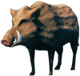
野猪害怕火，会避开火源。不过，受到挑衅后，会交替冲锋和撤退。近战或远程攻击都适合对付它们。
蜥蜴精

蜥蜴害怕火并避开火源，但受到挑衅仍会攻击。它们会冲上来咬一口，然后退后，再次咬击。使用火把可能有效，但通常任何武器都足够。
灰宝宝

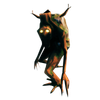
灰矮人幼体会主动避火。它们会朝玩家寻路，尝试攻击三次后绕圈逃跑，再重复这一过程。火炬和其他火焰武器很容易杀死它们，不过通常任何武器都足够。
黑暗林山
灰矮人

灰矮人会主动避火，处于近战范围外时会投掷小石块。火炬和其他火焰武器很容易杀死它们，不过通常任何武器都足够。
它们会瞄准单株植物进行破坏，投石可能妨碍种植胡萝卜、芜菁或重新种树。农田应围好栅栏，或建在灰矮人攻击范围之外。
灰矮人的攻击模式是跑向玩家，攻击两次后撤退，几秒后回来继续攻击。距离较远时则投石。游戏初期对付成群灰矮人时，躲开石块非常重要。对付单只灰矮人，可先用盾牌或手中武器格挡，再反击。初期应对群体时，建议一只只解决，并躲避其他灰矮人投来的石块。
摧毁巢穴时，可以利用敌人自己的攻击。躲在巢穴后，让灰矮人向巢穴投石，是可行但较慢的摧毁方法；也可以借此躲开石块，同时攻击巢穴。
灰矮人暴徒

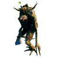
灰矮人暴徒不怕火，巨大的石棍可严重损伤建筑。火把和其他火焰武器较容易杀死它们。弓手用火箭在远处边退边射，可较快将其烧死。使用较低等级的武器和护甲时，建议主动弹反或闪避暴徒的挥击。
与普通灰矮人不同，它们没有远程攻击，无法靠近目标时便无计可施。
灰矮人萨满

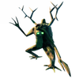
与灰矮人和灰宝宝不同，它们不怕火，毒攻击会造成持续伤害。火把和其他火焰武器较容易击败萨满。
此外，萨满会释放治疗花粉，持续恢复自己及同阵营生物的生命值。对付巡逻队和袭击群体时，应优先解决萨满。由于阵营机制，萨满也能治疗巨魔。
注意，萨满受伤时会将治疗花粉向上喷出约一米半，花粉飘落后才生效。因此，两支快速射出的箭或一次强力近战攻击，往往能在其自愈前杀死它。
巨魔

巨魔攻击较慢，可通过侧移和翻滚轻易躲避。它们生命值很高，伤害也很高，尤其能严重破坏矿床、岩石、建筑和树木。庞大体型限制了其移动，无法穿过狭窄缝隙。部分巨魔挥舞树干，部分看似空手，却会从远处向玩家投掷巨石。靠近空手巨魔时，它会用拳头砸地。
甩开巨魔并不容易，因为它比普通奔跑、但未冲刺的玩家更快。不过，它转向较慢，可绕树木、倒下的树干或石块躲避攻击。巨魔也敌视其他阵营，偶遇的骷髅可分散其注意力，帮助拉开距离逃跑。将愤怒巨魔引进沼泽，通常能使其较快停止追击，因为它会转而攻击蚂蟥等沼泽生物。
巨魔不敌视灰矮人，甚至能被灰矮人萨满治疗。躲避巨魔的同时迅速清除这些生物，有助于腾出移动空间，降低战斗难度。
巨魔弱穿刺，因此弓和矛特别有效。燃烧的箭非常适合，但水或雨会灭火，消除持续伤害。使用弹反能力较强的盾牌，青铜盾或更好，也可考虑弹反巨魔，但需要练习。穿戴后期护甲的玩家受到巨魔攻击时，伤害很小。
将巨魔引至诡秘墓穴等地下城入口，可在其绕入口移动时攻击。巨魔准备出手时，后退进入地下城。也可用相同的进出战术在巨魔洞穴内杀死它，因为洞穴中的巨魔不会追到洞外。
巨魔几乎无法应对深沟，有时会跌入沟渠或坑中，无法再构成威胁。由于巨魔能迅速破坏建筑，在重要聚落周围挖沟或筑土墙很有用。
空手巨魔的砸地攻击存在问题，命中可挖掘地形时会造成两次伤害。首次是主攻击，未减免时最高70伤害，第二次造成50伤害。
ghost

骷髅怪

骷髅生成时，可能持有弓，概率20%；剑，概率40%；剑和木盾，概率20%；或剑和青铜盾，概率20%。对付骷髅较简单：正常闪避或弹反后，用钝击或火焰武器反击。
腐臭遗骸

对付腐臭骸骨较简单：正常闪避或弹反后，用钝击或火焰武器反击。
其近战攻击造成毒素伤害。
树根

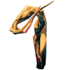
树根的近战打击伤害很高，除非玩家已升级至青铜护甲。
树根无法离开固定位置，因此走出攻击范围便容易躲避。考虑到它们被频繁召唤，试图全部杀死并不划算。
无尽之海
蛟龙

定位：蛟龙的掉落物值得猎取，但快速找到蛟龙的方法并不直观。
- 蛟龙仅在以下时间生成： 夜间 或在大雨期间（无论是否伴有雷暴）。小雨不满足条件。
- 夜间生成的蛟龙会在清晨消失。不过，若只在夜间到访该区域，它们就会留在那里。
- 因雨天生成的蛟龙不会在白天消失，以后即使天气平静也能找到。
- 夜间同时下大雨时，无法判断蛟龙是否会在清晨消失。
- 每一个 区域 在玩家航行经过时有概率生成蛟龙。夜晚或下雨时概率为5%，两者同时满足时为10%。每个区域每1000秒才尝试生成一次，因此来回航行不会增加生成尝试次数。
- 由于区域按网格排列，向西北、东北、西南或东南等对角方向航行，会触发更多生成尝试。
- 并非所有蛟龙都会生成在足以发现玩家的距离内。
- 最多约一半[ 1 ]蛟龙会生成在足以看见玩家的位置，并主动发起攻击。
- 部分[ 2 ]蛟龙会生成在玩家视野，即渲染距离之外，因此始终无法被发现。
- 其余蛟龙可通过观察船后方180度范围发现。全帆航行相比半帆可能漏看一些生成的蛟龙，但由于触发更多生成尝试，最终会遇到更多蛟龙。
- 采用最佳搜索方式时，整夜航行找到至少一条蛟龙的情况，应比找到0条更常见。
击杀：可在海上杀死蛟龙获取肉，霜箭最有效。若要获取其他掉落物，必须在陆地或能拾取水下物品的浅水中击杀。也可在击杀后立即跳入水中，在掉落物沉入海底前拾取。
驾驶维京船或维京长船，保持足够慢的速度，可将蛟龙引向陆地。不过，若60秒无法攻击，它会退回出生点。长距离引诱时，建议偶尔让它攻击船一次。撤退不会使其消失，白天的夜间生成蛟龙除外，因此可以再次追上。
还可用深渊之枪将蛟龙进一步拖上陆地，但并非必需。单人时耐力消耗很高，可能难以操作。搁浅的蛟龙不会攻击，而会尝试逃回海洋。
深渊之枪拉住实体时，即绳索绷紧时，会持续消耗使用者耐力。使用者换用其他武器攻击或按右键会断开绳索。最好由其他玩家或生物协助牵引者。
幽暗沼泽
邪煞之树

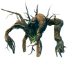
若想正面承受憎恶的攻击，可准备铁塔盾和斧头，尽量靠近其右腿，因为右腿攻击是三种攻击中较轻的一种。用盾逐次格挡，再用斧头反击。过程较慢，但攻击容易格挡，只要没有其他敌人同时攻击，通常不会有问题。
采用上述策略时，若成功弹反憎恶的攻击，可使用条纹铁盾做到，而它正站在火焰上，则火焰伤害会成为暴击，只需几次伤害结算就能杀死它。
可将憎恶引至火焰喷口上，无需使用武器便能造成大量火焰伤害。
最简单、也最取巧的策略，是爬上或搭建通道到沉没墓穴顶部，憎恶既爬不上去，也无法摧毁墓穴。它绕行一段时间后会靠近，此时可用剑等武器攻击，完全不会被它命中。
憎恶无法跨越深沟，会被阻挡或卡住。弓手可在完全安全的位置用火箭慢慢将其烧死。与对付巨魔一样，提前花时间布置可能发生战斗的场地，会带来很大收益。
软泥怪

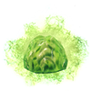
软泥怪会向玩家大幅跳跃，靠近后释放造成有毒的范围气云。毒云无法被挡住。中毒后，除非使用抗毒蜜酒，否则玩家会持续受到大量伤害。软泥怪喷毒前会发出吸气声。
虽然软泥怪抗穿刺，但用弓等远程武器从远处解决更安全。也可把握时机，用棍棒一击杀死。
大型软泥怪

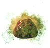
污泥怪会向玩家大幅跳跃，靠近后释放造成有毒的范围气云。毒云无法被挡住。中毒后，除非使用抗毒蜜酒，否则玩家会持续受到大量伤害。
虽然污泥怪抗穿刺，但用弓从远处解决更安全。大多数钝击武器的普通攻击无法一击杀死污泥怪，但次要攻击可能做到，默认按键为鼠标滚轮点击。
污泥怪死亡后会生成两只软泥怪。由于背刺机制，刚生成的软泥怪不会立即察觉玩家，会短暂处于易受攻击状态。
尸鬼

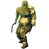
尸鬼生成时可能装备斧，概率75%，或弓，概率25%；无盾牌概率33%，装备木盾概率33%，装备条纹铁盾概率33%；无头盔概率25%，装备皮头盔概率25%，装备青铜头盔概率25%，装备铁头盔概率25%。
察觉附近敌人后，尸鬼会短促咆哮，再朝该方向冲来。持斧时挥砍，持弓时准确射箭。格挡和弹反很重要，可以使其停顿足够久，让玩家连续反击多次。
尸鬼精英

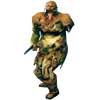
察觉附近敌人后，它们会短促咆哮，再朝该方向冲来。格挡和弹反尸鬼攻击很重要，可以使其停顿足够久，让玩家连续反击多次。其战利品可用于制作铁大锤。
蚂蟥

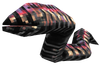
蚂蟥仅在水中主动攻击，被迫上岸时会尝试逃离。近战攻击主要造成毒素，因此抗毒蜜酒很有效。它们在昏暗沼泽中难以看清，但游动会扰动水面，可寻找移动的水花辨认。玩家游泳时只能用拳头攻击，因此在沼泽跌入深水经常致命。可用锄头修建高于水面的土路避免袭击。将蚂蟥引到岸边后，可安全使用投矛、弓或部分钉头锤的次要攻击。用深渊之枪将蚂蟥拖上岸，会使其移动缓慢，回到水中前无法攻击，便于刷取血袋，也无需入水拾取掉落物。
蚂蟥虽属于亡灵阵营，却免疫精神伤害。
焰灵

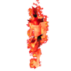
焰灵接触水时持续受伤，因此可在火焰喷口降低地形，建立木炭和焰灵之核产出点。使用冰霜武器能更有效地伤害它们。
鬼魅

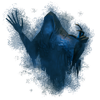
幽灵仅在夜间生成。夜间避开沼泽即可避免遭其袭击。银制武器会对幽灵造成持续伤害。
虽然靠近幽灵看起来很可怕，但用盾弹反是可行且较容易的，因为它唯一的攻击是挥爪。战斗时要留意其他敌人。幽灵发现玩家前，常飘浮在较高处；夜间不要只顾注意蚂蟥等地面威胁。
幽灵速度快，不受水减速，因此可以将其从群体中引开，甚至引出沼泽，降低威胁。猎杀幽灵时，可在两根木柱顶部建一个3x3小平台，四周安装尖木桩围墙，仅留梯子供攀爬，以获得保护。
幽灵虽然很大，却常尝试穿过门、窗或交叉木梁之间的狭窄开口。可利用这些开口，用普通木箭慢慢射杀，例如从上述狩猎平台的斜梁镂空屋顶射击。
凛冽雪山
狼

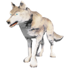
狼移动和攻击都很快，可能非常危险。其生命值低、踉跄时间特别长，因此容易受到攻击；但高速攻击和移动仍使其危险，尤其成群或具有较高生物等级时。狼连续攻击非常积极，几乎不给喘息机会。其奔跑速度不低于一般玩家，会持续追赶，直到玩家耐力耗尽。有效逃脱的方法是迅速爬高或下降，打断其寻路；否则玩家会耗尽耐力，既无法战斗，也无法逃跑。
格挡狼的攻击后，仅够进行一次快速反击。之后必须再次格挡，否则会被咬中。用弓，或尝试弹反以获得更长反击时间，能更有效地对付狼。
被迫面对多只狼时，若它们彼此分开，应尝试逐只击杀。满级铁剑一次挥击就足以使狼踉跄。近距离被包围时，最好使用双手棍棒、长柄战戟或战斧等大范围攻击。数量悬殊或装备不足时，可放置工作台并爬到上面，狼通常无法攻击玩家，只能攻击工作台。
群体中若有星级狼，必须优先解决；其增强伤害可能立即使玩家踉跄，2-3次命中便近乎致命。建议先弹反，因为首次普通攻击通常无法使其踉跄。对付其他较弱的狼时，可能宁可承受少量攻击，也要集中处理星级狼。穿戴满级沼泽阶段护甲或其他轻甲及披风时，普通狼约造成20-30伤害。
有星级的狼在夜间出现，若不在玩家范围内，会在白天消失。
霜龙

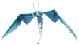
幼龙每次射出3枚冰霜球，施加冰霜效果，使玩家减速约2秒。每轮射击后，它会绕小圈飞行，再重复攻击。
用弓较容易解决幼龙，侧移躲开冰霜吐息即可。由于通常遇见它们时已具有抗寒抗性，容易低估其威胁。袭击事件中，它们可能出现在凛冽雪山之外；暴风雨中或幽暗沼泽生态区尤其危险，因为潮湿效果会提高其冰霜伤害。
芬里

芬灵有三种常规动作：普通挥击，蹲伏准备后扑跃挥击或砸击，以及主要用于威吓和呼叫附近狼的嚎叫。银制武器会对芬灵造成持续伤害。
弹反芬灵时，要记住它几乎立即恢复，因此建议一使其踉跄就迅速攻击。
石魔

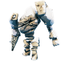
石魔生命值很高，对大多数伤害类型具有抗性，重生也很快。它们的手臂可能是巨石或尖刺，决定可用近战攻击。所有攻击都造成大量伤害和击退。
巨石臂石魔有2种攻击：单手向前砸击较轻且快，造成110钝击和200地形；双手向前砸击较重且慢，造成110钝击和200地形。
尖刺臂石魔有2种攻击：正面尖刺攻击较轻且快，造成110穿刺和200地形；180度尖刺横扫攻击较重且慢，造成110钝击和200地形。
石魔每轮最多攻击3次，随后短暂走开或绕玩家移动，再次接战。此时可趁机反击几次，再转回防御。
最佳方法是用盾弹反轻攻击，再用铁锤或狼牙棒的3连击，在踉跄期间消耗其一半生命值。较慢攻击的踉跄时间很短，因此此策略不适用。
镐也适合击杀石魔，因为其由岩石构成，镐能造成2.5x伤害，其中0.5x来自穿刺伤害。不过，攻击慢、基础伤害低且无连击，使铁镐的伤害低于钉头锤。镐无法与盾同时装备，需要手动切换武器，也更难操作。此外，攻击范围与地面相交时，镐很容易受到33%伤害惩罚。跳跃攻击、站在高处或紧贴目标可减轻问题，但并不可靠。
拥有好弓、较高弓术技能和黑曜石箭或更好箭矢时，可以逐渐削减石魔生命值，直至其倒下。在双方之间挖沟，可使石魔无法反击，但可能很耗时。
另一种方法是挖坑，用深渊之枪将石魔拖入，再跳到其头顶用镐攻击。这对尖刺变体很有效，因为它无法攻击头顶。不过，此策略无法利用踉跄的双倍伤害。也可从较高地形跳到头顶，但石魔移动时很容易跌落。
也可把石魔留在坑中，阻止附近生成其他石魔。探索、建造基地或长期待在此区域时，附近的石魔可作为备用应对手段。遭到攻击后，跑到石魔附近高处，可使狼和霜龙转而攻击它，让玩家有时间恢复并制定策略。尤其是狼，往往会直接被石魔杀死。
石魔伤害很高，没有狼皮护甲或更好装备及良好增益的玩家应谨慎。邪骨恶灵的放逐之力能大幅降低战斗难度。石魔攻击缓慢，攻击期间较容易绕至其身后反击。
邪蝠

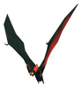
蝙蝠较弱，除非探索者毫无准备，否则主要只是烦扰。它们飞行迅速且不规则，快速攻击一次后便飞走，可反击窗口很短。体型小、移动无规律，使箭难以命中；攻击后常飞到冰柱或洞顶不可破坏的岩石后，再回来袭击。
虽然伤害不高，蝙蝠通常以4-10只成群出现，常在竖井中生成。探索者下降或站在边缘时可能遭袭。部分武器攻击会把角色向前带，粗心玩家可能直接掉到洞底，死于蝙蝠最强的盟友：重力。
警觉的探索者可听出蝙蝠声音，在其靠近时一击杀死。但蝙蝠从上方或下方陡角袭来时，武器攻击范围可能不在同一高度，难以命中。首次攻击落空后，最好格挡等待它再次靠近，因为它常飞高躲在洞顶障碍后，远程攻击很难。站在平地，背靠角落，用剑或刀等快速武器最容易应对，也能减少来袭方向。鹿角战锤、铁大锤或长柄战戟次要攻击等大范围攻击，适合清理蝙蝠群。矛或长柄战戟主攻击等范围狭窄的攻击则较难命中。
尽量不要在自家建筑内或附近对付蝙蝠群。它们飞行不规则，而多数武器伤害范围难以精确控制，可能砸坏的自家物品比杀死的蝙蝠更多。最好在开阔处战斗。应对“你搅动了大锅”袭击的方法之一，是在基地内建造篝火或风车，再站在营火或风车旁。蝙蝠袭击时会撞进火焰或旋转叶片而死，但袭击期间和结束后都要修理设施。若驯服动物的围栏有屋顶，确保所有开口都很窄，或用铁栅栏封住。
巨狼

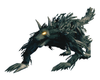
远处发现它们时，精准一箭可能在其察觉前解决。近距离则银制武器很有效。务必小心强力扑击，其巨大击退可能将未做好准备的战士推入裂隙。
狂信徒

狂信徒对周围很警觉，会走向噪声来源，因此在附近破坏物体或战斗时，很难潜行接近。不过，它们不会打开将石制巢穴与天然洞穴分隔的门。
起手攻击是在面前爆发火焰，造成初始火焰伤害，并使玩家燃烧5秒。该攻击范围宽，无法格挡或弹反。随后进行两次燃烧爪击，除物理伤害外，每次也使玩家燃烧5秒。它们会持续按火焰、爪击、爪击的顺序循环，直到死亡或失去玩家踪迹，后者会重置循环。
火焰爆发射程较短，闪避、侧向翻滚或后退可离开范围。墙壁、门等实体也会阻挡它。
爪击可格挡或弹反，但像芬里一样，它们的踉跄时间很短。
若玩家拥有抗火大麦酒，狂信徒的火焰攻击和爪击燃烧效果威胁很小，但爪击仍造成物理伤害。它们非常怕灵魂伤害和毒素伤害，因此包括寒冰锤在内的银制武器很有效。毒素、银或毒针箭也有效。银箭最有效，但资源可能更适合用于制作或升级尸鬼之牙，再搭配其他箭，最好是毒箭，因为毒箭能与尸鬼之牙的毒效果叠加。
北境平原
杀人蜂

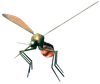
早期进入北境平原猎杀平原牦牛获取肉类可能值得，但难免遇到杀人蜂；装备较差的玩家若没有好策略，很难生存。
杀人蜂飞到目标旁后几乎立即攻击，再飞开绕目标盘旋数秒，随后再次攻击。它们仅有10生命值，一次打击通常就能杀死。主要困难是几乎无法避开的最高90伤害攻击；生命值不足，或格挡能力不足却尝试格挡时，玩家会踉跄。
格挡能力超过90后，对付杀人蜂便很简单，格挡后反击即可无伤击杀。用青铜盾或更好的盾进行弹反，可获得足够格挡能力。不过，杀人蜂免疫踉跄，弹反还会稍微击退它，可能更难在飞走前命中反击。
使用弓很有效。早期玩家便能一箭击杀杀人蜂，可从远处狙杀；若它已来袭，也可用完全拉满的弓，在它靠得足够近之前精准射杀。
近战时机准确，在它俯冲时命中即可无伤击杀。鹿角战锤等需要2只手持握的钉头锤攻击范围大，对时机较宽容，但挥击有延迟，可能需要练习。生命值和护甲足够时，玩家不会被杀人蜂击至踉跄，可付出部分生命值反击。玩家无武器和护甲速度惩罚、持续跑离时，杀人蜂总会打空。邪煞之根护甲的的穿刺抗性也能提供保护。
杀人蜂能飞过围墙，可能威胁北境平原基地。不过，木梁等部分建筑部件不会被识别为障碍，它不会绕飞，而会撞上。用这些部件在墙顶构造复杂形状，例如悬挑结构，可能使其无法越墙，保护基地内部。地板和屋顶部件不适用，因为杀人蜂会识别并尝试绕过。
平原牦牛

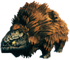
牦牛生命值和伤害极高，抗钝击和劈砍，因此剑和大多数钉头锤伤害较低，箭、长柄武器及矛更有效。狼牙棒因含穿刺伤害，可造成很高伤害和踉跄积累。体型庞大使牦牛难以通过狭窄地形，玩家容易绕开它。
牦牛游泳时也能攻击，会威胁游泳玩家和船只。它有短距离咬击及范围踩踏两种攻击，首次必定使用踩踏。护甲不够强时，即使持盾也会受到大量伤害。其视觉和听觉极差，甚至不蹲伏也能进行潜行攻击。极远处箭射命中后，它有时追赶片刻便返回原位，不利于引到安全地点击杀。有时跑至远处阴影并蹲下，也能甩开来袭牦牛。
丑地精

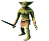
设备：丑地精持有不同武器，决定伤害类型及近战或远程攻击方式。另有33%概率持盾，但仅是外观装饰。
- 33%：持剑，近战攻击造成劈砍伤害。
- 33%：持棍棒，近战攻击造成钝击伤害。
- 17%：持长矛，远程攻击造成穿刺伤害。
- 17%：持火把，近战攻击造成钝击和火焰伤害。
常规：丑地精先绕玩家移动，片刻后靠近进行三次近战攻击，或使用远程武器，再重复该过程。
满级银剑或水晶战斧一击可使零星丑地精踉跄。尸鬼之牙弓即使用低级箭，也可使其连续踉跄。通常应在它们单独靠近时逐只击杀。面对有星级的丑地精，建议先弹反再攻击。剑或钉头锤的次要攻击可能使其踉跄，但风险更高。
丑地精较矮，比普通身高的玩家更容易被水淹。可引至天然河流或海岸，使其涉水减速，便于分离目标或远程射击。
近战：丑地精攻击伤害很高，对未准备好的玩家极其危险。即使护甲满级、食用最佳食物，也可能迅速死亡。不过，多数攻击范围较短，练习后可躲避或弹反。它们可能在玩家攻击动画期间反击，出手时机必须谨慎。体型矮小也使不平地形上的近战攻击容易打空。熟练使用血肉撕裂者时，近战非常强力：踢击能立即使2星丑地精踉跄，再利用双倍伤害，以满级血肉撕裂者三次攻击造成近600伤害，杀死2星丑地精。
远程：满级猎户弓配合霜箭或蜂针箭，可在未被察觉时一击杀死普通丑地精。冰霜箭还能减速甚至短暂停住目标。银箭和黑曜石箭也有效，但立即击杀的概率较低。
成群丑地精可能数秒内杀死玩家，因此远程逐渐削减村庄敌人很合理。极远处射箭，即使未命中，也能引来单只或小群丑地精。短暂挖地或砍树也能吸引注意。它们靠近期间有充足击杀机会，尤其先被冰霜箭减速时。
北境平原中，能遮蔽并提供高处射击位置的建筑，若周围挖有深沟，可用于刷取丑地精。巡逻丑地精发现玩家，或被吸引后带回此处，会试图攻击却难以成功，因为只有较少见的投矛者具备远程武器。丑地精难以判断玩家挖掘沟渠的位置，容易跌入；掉进深沟后便无计可施，可从容射杀。挖地会吸引丑地精，开始前务必清场。
组：对付多只丑地精时，在平地使用棍棒等高击退近战武器，可使其攻击落空。近战建议用狼牙棒或寒冰锤：狼牙棒原始伤害更高，寒冰锤的减速则有助于拆散群体、延缓来袭攻击。长柄战戟次要攻击及双手棍棒主攻击也适合应对群体。若有丑地精萨满、投矛者或丑地精狂战士，应优先击杀，或重点弹反它们。把握时机迅速改变方向可躲开投矛；投矛者的攻击前摇明显，要仔细观察。
玩家可能同时被多次攻击命中，因此面对丑地精群时，一次失误便可能迅速死亡。随时可以逃跑，但要注意投矛者的远程攻击。
丑地精狂战士

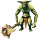
丑地精狂战士有三种攻击，均可弹反：从右向左挥击、延迟后从左向右挥击，以及咆哮后连续三次头顶砸击。连续砸击弹反失误经常致命。有星级狂战士伤害极高，即使护甲优秀、增益充分，也容易被打至踉跄乃至死亡。近战面对0星狂战士时，时机准确可用血肉撕裂者踢击使其踉跄，再快速击杀。但即使血肉撕裂者满级、技能100，也无法踢至有星级狂战士踉跄。
丑地精萨满

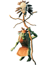
丑地精萨满有三种能力：法杖近战、投射火球，以及为自己和附近盟友吸收一定伤害的护盾法术。武器可破坏魔法盾，使其再次受到近战和投射物伤害。
焦油怪

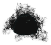
焦油怪的远程攻击会立即施加毒素和被沥青黏住了状态效果，也能远距离跳跃至目标近战范围。生命值低，容易被远程击杀。远程攻击一次射出六枚投射物，近距离伤害很高。
焦油怪生命值低，容易被远程击杀。银制箭是最佳弹药，优于燃烧的箭，造成46伤害，其中26穿刺加20精神，精神伤害在三秒内结算。焦油怪属于亡灵，易受精神伤害；银箭总伤害更高，有助于在其困住并杀死目标前解决。最后，蜂针箭总计造成31伤害，因为焦油怪仅承受一半穿刺伤害。
若附近有平原牦牛，可远距离射箭吸引焦油怪，再将其引向牦牛。两者会战至一方死亡，幸存者通常也身受重伤。
焦油怪攻击会使受害者沾满焦油，大幅减速。不过，沾焦油时翻滚速度不变，因此时机准确、耐力充足时，可持续闪避直至效果消失。其远程攻击包含六枚高伤害投射物，射程中等、弧度明显。命中任何对象都会施毒，包括树木，尽管树木不会受到毒伤害。
具有抗毒蜜酒效果时，在巨魔 护甲中被单枚投射物命中通常可以存活。距离太近或攻击时不移动，容易被四枚命中，通常无法存活。没有抗毒蜜酒效果时，单枚投射物便会迅速削减生命值。
投射物延迟后瞄准玩家位置，速度很慢，因此侧移可有效躲避。只有向下坡发射时，投射物才会越过目标位置；其他情况下，无法侧移时可尝试向后冲刺。盾牌可格挡或弹反，但会迅速消耗耐力。注意，焦油怪与部分生物不同，可直接向上射击，因此即使困在深沟或坑中，仍能攻击看得见的玩家。
迷雾之地
邪蛛探索者

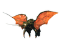
邪蛛探索者是迷雾之地最常见的敌人，抗劈砍、穿刺和钝击等所有物理伤害，但没有元素抗性，因此元素魔法或迷雾行者等元素伤害武器最有效。具有甲壳护甲时，几乎任何武器都能弹反普通探索者，随后造成大量反击伤害。一星和二星探索者伤害很高，甚至可能立即使全副武装、使用甲壳盾的玩家踉跄。尽管抗钝击，使用血肉撕裂者的玩家仍可踢至2星探索者踉跄。
探索者的飞扑很快，即使玩家冲刺也能迅速追近。不过，它在地上爬行比玩家慢。逃离时，应等它落地后再冲刺。
- 寒冰锤很有效，因为冰霜负面效果会减慢探索者，提供撤退或继续攻击的机会。实际上寒冰锤比狼牙棒伤害更高。
- 长柄战戟的重攻击，尤其是黑金属或杀戮之戟，可使普通乃至一星探索者踉跄。旋转挥击也很适合将其推落边缘，让玩家短暂恢复或撤至安全位置。
- 相比其他弩箭，用强弩发射的甲壳弩箭具有足够冲击力，能使普通探索者踉跄。
- 使探索者踉跄不会打断其飞行双爪攻击，建议翻滚闪避。
邪蛛幼虫

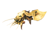
大多数武器一击便能杀死邪蛛幼体，范围攻击尤其有效。软泥炸弹和胆汁炸弹非常适合，尤其在频繁生成幼体的蛊虫之后首领战中。
邪蛛侦察兵

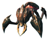
邪蛛侦察兵异常耐打，抗所有物理伤害。用不含元素伤害的弓或弩击杀既浪费资源，也耗时。最可靠的方法是弹反后攻击，即使用魔法武器也应如此，因为弹反会放大伤害。不过，弹反时机失误会承受大量伤害，其大范围攻击还会迅速摧毁周围环境和建筑。侦察兵腹部，也就是后侧，具有弱点。
在腐疫矿区中，侦察兵有时太宽，无法通过狭窄通道，可从远处攻击。它们常出现在螺旋楼梯顶部，难以绕过，此时邪骨恶灵的放逐之力非常有帮助。退回入口通常会使其卡在门口拱架前，既可安全慢慢击杀，也能借它挡住其他探索者。
多人时，最好至少一人从正面吸引并弹反侦察兵，另一人从后方攻击腹部，可大幅缩短战斗时间。此生态区地形持续消耗耐力，这也能充分利用休息充分增益。单人最佳替代方式是获得招魂之杖后召唤骷髅，由它们正面牵制，玩家从背后攻击弱点。
从背后靠近侦察兵仍可能受到双爪砸击，应格挡或躲避，不能盲目冲上去。也要偶尔后退，避免被列为主要目标，除非愿意与其他玩家或召唤的枯骨傀儡随从交换目标优先级。
准备不足时，可以利用侦察兵不会飞的特点，在陡坡上轻易跑开或绕过它。
- 弹反是应对强敌最常见的策略，因为被弹反的生物受到双倍伤害。弹反后反击侦察兵有效但较慢。由于抗大多数物理武器伤害，不弹反便很难使其踉跄。多人时，一人弹反可让其他人集中攻击弱点。
- 侦察兵弱点在腹部，也就是后端。攻击时尽量站在正后方，后腿可能挡住攻击，使其无法造成额外伤害。背靠墙减少击退，弹反后跳过或绕过它，攻击弱点。
- 侦察兵抗穿刺，因此元素箭更有效。若在惊动前发现它，可狙击腹部护甲下的粉色弱点，在偷袭加成之外再造成额外伤害，为战斗取得优势。
- 寒冰锤和迷雾行者很有效，因为其冰霜效果会减速；实际上寒冰锤比狼牙棒伤害更高。
- 侦察兵非常耐打，但不擅长通过复杂地形。有远程武器时，只需利用双方高度差便能轻易解决。强弩配合甲壳弩箭命中腹部，每发可轻易造成约200伤害。
- 站在邪蛛侦察兵上方安全地击杀它：
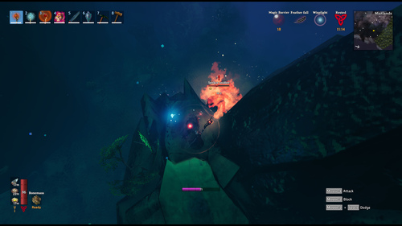

矮人

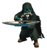
直接攻击矮人聚落，会使附近矮人永久敌视玩家。不过，多数聚落最终会被来袭探索者攻陷，尤其没有矮人法师时。若能引来加尔和侦察兵，它们可帮助完成部分乃至全部战斗。至少可以先让敌人削弱矮人，再亲自出手。
矮人默认对玩家中立，因此玩家可以自行选择攻击时机和方式。
若想从矮人建筑或箱子获取矮人提取器、软组织而不激怒矮人，可将埃达精华乃至河豚扔在其身旁，逐渐杀死它而不触发敌意。也可完全不杀矮人，将精炼源质逐个扔在守护石、提取器箱或木箱旁，辐射最终会破坏守护石或箱子。
困难打法:
没有探索者、加尔或河豚、精炼源质等间接伤害帮助，直接攻击矮人群或聚落时，规划极其重要。1星、尤其2星法师是最大威胁之一，通常应先解决。2星刺客伤害也很高，绝不能低估。开战时优先使最强矮人踉跄并击杀，最好趁其离群。可走向它们、轻推以被推开，但它们可能寻路返回原位重新集合。
高处非常有用，尤其通往玩家位置的路径难以通过时。距离足够远、瞄准准确，物理或魔法远程攻击可降低部分难度。
多人合作最适合对付矮人群。单人若能满足高额源质需求，最好用招魂之杖召唤帮手。战斗往往比预想更难预测，应利用所有援助。多人也应考虑至少一人使用亡者召唤杖，搭配佑护之杖为玩家与枯骨傀儡随从施加护盾。
加尔

加尔攻击在较大范围内造成钝击和火焰伤害，持续燃烧可能造成超出预期的伤害；抗火大麦酒非常有帮助。它还会召唤壁虱幼虫攻击玩家。攻击橙色腹部弱点最有效，例如使用强弩。
近战武器几乎无法杀死加尔。即使跳到其顶部，它也会将玩家甩下。
加尔攻击不会损伤或摧毁远古护甲和巨人遗骸，玩家可暂时躲入这些结构。不过，范围伤害仍会穿过地形伤到玩家。紧急时，甚至世界树嫩枝也能遮挡其投射物。
进入迷雾之地后仍穿树根套装等轻甲的玩家，应特别警惕火焰伤害，优先制作佑护之杖或更换护甲，避免极快且有时几乎无法躲开的死亡。树根套装的弓术加成很诱人，有助于持续对加尔布满卵的腹部造成穿刺伤害，但其射击有轻微偏差。玩家若以为只会命中原先站立位置，反而可能跳向实际落点而死亡。
加尔主要造成火焰伤害，同时在大范围内造成可观的钝击伤害，因此有多种有效防御。邪骨恶灵的放逐之力能显著减少钝击伤害；也可用芬里护甲套装，亚格鲁斯的放逐之力或抗火大麦酒降低火焰伤害。邪骨恶灵之力可与大麦酒结合，同时抵御两者，是探索迷雾之地的安全选择，因为除加尔及矮人法师外，所有生物都只造成穿刺和钝击伤害。
加尔投射攻击看似不准，但相对投射物大小，伤害范围很广，也善于预判移动目标，因此命中玩家的次数超出预期，命中大船更频繁。发射后立即奔跑、跳跃或闪避有助躲开；可以听声音判断，无需一直看着加尔。格挡或弹反可大幅降低伤害，包括持续火焰伤害。用许多高级武器，乃至余烬之杖等魔法武器，也能不使用盾成功弹反0星加尔，但其免疫踉跄，无法获得弹反伤害加成。火球不会损伤天然石头、远古护甲和上古之剑，可安全用作掩体。
加尔偶尔生成3只壁虱幼虫，它们会锁定并尝试附着玩家。附着后每0.5秒造成50穿刺伤害。
加尔通常高于玩家，因此弓、弩或魔法等远程武器是最佳选择。不过，这也是其弱点，命中腹部橙色卵囊会造成暴击伤害。
玩家落在加尔顶部后，它会在片刻后甩落玩家，并造成一定钝击伤害，另有坠落伤害。不过，每隔数秒跳跃可避免被甩落。
壁虱幼虫

单只壁虱容易处理。它们弱穿刺，因此狼牙棒等相应伤害武器能稳定一击杀死多只。附着玩家后，会持续造成大量穿刺伤害，可用战斗翻滚可靠地甩掉，默认按格挡键，即鼠标右键，加跳跃键，即空格。也可用范围攻击杀死附着壁虱，大锤类武器很有效，或在角度和时机正确时弹反其攻击。邪煞之根护甲的的穿刺抗性能提供很好保护。
盾牌可格挡或弹反壁虱，迅速解决它们。追击时壁虱移动极快且频繁跳跃，被发现后远程攻击通常无效；闲置时则移动慢且不频繁，远距离射击很有效。无论哪种情况，0星壁虱的生命值都较低，虽然高于杀人蜂，但几乎任何北境平原阶段或更好武器通常都能一击杀死。
1星和2星蜱虫的生命值更高，与普通蜱虫不同，可能需要多次命中才能击杀。尤其是2星蜱虫，能在不到一秒内杀死未做好准备的玩家；穿着轻甲的玩家（例如 埃达织物套装）尤其容易受到它们的伤害。
壁虱常成群出现，范围攻击适合同时清理。黑金属戟等长柄战戟较难命中不同高度目标，可能漏掉跳跃壁虱，在迷雾之地不平地形上也较难使用。歼灭者等双手棍棒或余烬之杖等魔法武器适用于各种地形；余烬之杖的远程范围攻击尤其适合从远处同时解决多只。
如果它们附着在玩家身上，可以采取以下措施：
- 使用长柄战戟或双手棍棒等范围武器，伤害并击退壁虱。
- 翻滚可甩掉附着在玩家身上的蜱虫。
- 挥动武器时转身，可命中角色背上的壁虱。
- 软泥炸弹或胆汁炸弹的持续范围伤害能轻易杀死壁虱。
- 附着壁虱的伤害仍可像普通攻击一样格挡，成功弹反会使其脱落。
灰烬之地
堕落女武神

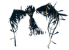
银制箭的精神伤害对堕落女武神非常有效。它在飞行中停顿时，要准备闪避飞弹，被命中超过两次会受到大量毒素和火焰伤害。旋风施放较慢，可跑出范围；爪击范围大，必须格挡或弹反。
建议以背刺或伏击伤害开战，而不是期待附近堕落女武神不锁定自己。尽量用强弩强力弩箭，或更好的任一开膛弩变体，提高首次命中伤害。低生命值时射出的开膛弩：皲裂伤害可观，可按需用血魔法降低生命值；开膛弩：风暴和开膛弩：邪根也适合起手。
同时面对女武神和多个其他目标时，可诱导旋风和喷火造成友军伤害，但风险更高。
法师建议用招魂之杖或巨魔之杖制造牵制，让自己有喘息机会，使用其他法杖或远程武器。单人几乎总应采用此方法，多人队伍也会根据情况从召唤物牵制中获益。
灰烬战士

焦黑战士的步行较慢，容易跑开。
战士有前刺和延迟挥击等不同攻击动画，熟悉之前较难预测弹反时机。
除非用于背刺或伏击的穿刺攻击，多数攻击对战士同样有效。最佳方式是耐心战斗，合理管理耐力和源质。
远程玩家要注意，战士有时很安静，会趁玩家专注其他敌人或恢复时悄悄靠近。穿轻甲或主要依靠佑护之杖护盾时，多名战士从视野盲区同时前刺，很可能迅速杀死玩家。
即使穿重甲或持盾，也可能如此，因为短时间内多次前刺会超出踉跄承受上限。即使以生命值为主选择食物，多名战士同时命中时，食物也难以救命。
尽可能将它们分开，依靠队友，或用招魂之杖/巨魔之杖召唤物牵制。逃进附近有更多敌人，尤其战士的区域时，不要因其步行较慢而产生安全错觉。数量增多会迅速逆转局势，提前规划撤退路线，可防止1分钟战斗变成10分钟混战。
灰烬射手

焦黑射手有两种攻击：玩家较远时连续射击，较近时单发直射。直射可像尸鬼弓箭一样弹反。
由于抗穿刺，最好近战解决。远程例外包括强弩或开膛弩的高额背刺、伏击伤害，尤其配合血魔法使用开膛弩：皲裂，以及野生之杖、余烬之杖或破碎之杖等源质武器。
- 野性之杖可供法师逐渐削弱射手，因为多数射手进入范围并看见玩家后，会停在固定位置。
- 余烬之杖无需极其精准，也能造成稳定伤害，因为范围伤害仍能烧死目标。
- 碎裂之杖也可靠，但必须直接命中，使整簇碎片在射手身上爆炸。射偏时可能仅使其燃烧，效果微乎其微。
召唤物通常应留给规模较大、种类混杂的敌群，但也能对付上述方法尚未解决的射手。招魂之杖和巨魔之杖召唤的枯骨傀儡、召唤巨魔若使用得当，可牵制射手群并减少来袭伤害，但需要精细管理大量源质。使用巨魔之杖时，要准备杀死战后仍存活且具有敌意的召唤物。
灰烬术士

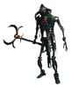
术士仅出现在堡垒或火龙剑任务地点，非常危险。靠近前最好使用银制箭；抗火大麦酒最适合应对火球。其召唤物虽然脆弱，但伤害与灰烬僵尸相同。
玩家可先处理召唤的灰烬僵尸群或术士，但与实体生成器一样，优先杀死术士及每个邪念之像才能终止敌人不断出现。若用攻城锤突破并穿过敌群，注意术士火球弧度很大。玩家在上层城墙而术士在地面时，火球通常落到墙内侧，而非命中玩家。此时魔法或远程攻击很有利，但仍需处理成群追来的召唤焦黑抽搐者。
灰烬僵尸

这些焦黑生物在灰烬之地周围频繁生成，单独威胁很小。行为类似灰矮人，绕玩家奔跑，投灰烬石块造成较低伤害，偶尔靠近进行伤害略高的近战攻击。成群时非常烦扰，容易将玩家推向更致命的敌人。
2星抽搐者单独出现时就很危险，成群时更是如此，应优先攻击。它们尤其是近战攻击，比普通战士更具威胁。2星变体经常生成于 苦痛纪念碑（精英） 环绕 神秘的地点。弓技能较高的玩家可以轻松解决它们，不过它们速度快且不断改变方向，因此需要一定射击技巧。
近战使用者可用杀戮之戟和歼灭者等范围武器迅速清群。法师使用余烬之杖很有效，其他法杖较难发挥，因为抽搐者喜欢保持距离，体型小、速度快，难以稳定命中。部分例外是近距离减慢撤退目标的冰霜之杖，以及能在其预计经过区域造成伤害的野生之杖。
摩根

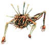
近战玩家：
迷雾行者几乎立即施加冰霜，减慢莫根，让玩家从侧面用迷雾行者再次命中。它准备翻滚时，不会朝玩家滚，只会向侧面滚，因此向后翻滚即可躲开。侧滚相比冲锋和挥击伤害很低，较高难度也容易弹反。挥击稍难躲，但掌握翻滚时机即可。带一瓶耐力蜜酒以防万一。结合邪骨恶灵之力、约80生命值的高生命食物和重甲，可承受多次命中，大幅降低难度。尽量利用莫根速度快的特点，将其从其他敌群引开。洞内战斗无需担心其他敌人，可能比野外容易，但洞中迷雾也可能烦人。翻滚会造成友军伤害，紧急时可用来控制敌群。
魔法玩家：
充足耐力和羽毛披风非常有帮助：爬到高处，旋风状岩塔通常路径狭窄，莫根难以追上，还会挡住其他敌人。尽量攻击，直到它即将到达，冰霜之杖可争取更多时间，然后跳下。等待它跟下来，同时恢复源质，再绕过它爬上去，反复进行。
对于多人团队:
若愿意使用足以使莫根踉跄的近战装备，或有队友能做到，法师可在其踉跄时换用雷霆之杖命中。多人中配合前排更有效，因为可提前准备雷霆法杖；单人则需在短暂踉跄窗口内切换并装填，难以把握。理想情况下，两名或更多玩家可连续用雷霆法杖形成踉跄连锁，利用其闪电弱点迅速击杀。
骨骺蛟龙

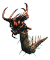
霜箭对骨骺蛟龙很有效。与蛟龙不同，它白天也生成，并会喷火，登陆前应迅速解决。它们在近岸生成，掉落物不沉，因此比普通蛟龙更容易刷取。
灰烬刚鬣

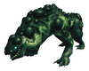
灰烬刚鬣有两种攻击：近战范围内咬击，以及扑跃。它们奔跑也很快，因此可能比焦黑生物更危险。
扑跃击退很强，可能将玩家推入熔岩。它们能直接在熔岩上奔跑，将玩家撞下玄武岩炸弹平台，因此穿越熔岩前应先解决。扑跃具有特别的友军伤害，可在混战中利用。引导其扑向小岩石或建筑，也能阻碍移动，便于逃跑或边退边打。
灰烬刚鬣虽抗毒和火，却不像焦黑生物等其他灰烬之地敌人那样免疫。因此，元素魔法及含毒的翡翠升级武器对0星和1星刚鬣有效，但对2星效果预计很小。
另一种可靠的高伤害方式，是使用克罗姆等需要2只手持握的剑，最好用屠杀者，施展强力突刺。尤其低生命值时使用重型屠杀者，伤害潜力极高，可有效造成踉跄并迅速击杀。以高生命食物提高生命上限，或通过血魔法主动降低当前生命值，可进一步优化伤害。被包围或即将被包围时，应谨慎使用。
灰烬之鹫

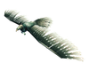
灰烬之鹫会尝试绕后，用爪攻击。玩家转身迎击时，它会向上飞，再次绕后。它也是游戏中最快的敌人之一，能追上穿轻甲、获得完整疾跑效果的玩家，因此对低生命玩家尤其危险。
灰烬之鹫伤害和生命不高，但速度快、爱绕后，十分烦人，数量多时也具威胁。附近有它们时与其他敌人交战要小心，可能被绕后堵住。
灰烬之鹫只会在灰烬之地生物群系的两类地点出现：秃鹫巢穴周围，可能出现多只，但仅一次，它们会不会定期重生；或随机出现在海平面及以下区域。除巢穴附近一次性出现外，主要遇见地点是灰烬之地海岸，可在稍离岸的位置生成。内陆低海拔少，因此随机生成罕见，偶尔熔岩足够低时也能生成，但它们不免疫熔岩，接触后很快死亡。它们常生成在稍远海面，不容易发现留在陆地的玩家；向其涉水靠近、但保持能站立的水深，通常足以吸引注意。
范围攻击对灰烬之鹫很有效，原因与对付邪蝠类似：移动快、来袭角度刁钻，范围伤害更易应对，尤其成群时。生命值低，即使较弱武器也能迅速击杀，例如黑金属戟次要攻击仍可两击解决。适合灰烬之地的选择包括杀戮之戟次要攻击、歼灭者，以及法师的余烬之杖。后两者具有球形命中范围，尤其合适；长柄武器次要攻击是平面圆形，目标高度与玩家不同时容易打空。
武器合适时，即使仅穿迷雾之地阶段护甲，也无需太担心独自一人灰烬之鹫，因为能在伤害累积前迅速解决。它们加入其他生物的战斗时更危险，灰烬之地生成频繁，经常发生。此时应优先迅速击杀，否则既累积伤害，也妨碍应对其他敌人。
其他选择包括强弩和开膛弩变体的背刺、伏击伤害，尤其多人乘灰烬长船航行时。船上有瞄准良好的弩手或弓手，可避免近战误伤自家船。陆地上应寻找可背靠并按需转身的位置，以应对盲区挥击。
邪影弩炮

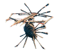
对付斯库格最好用弓或投石机。弓更有效率，可在其攻击范围外击杀。投石机配爆炸弹药需要稍作瞄准，但也能摧毁墙壁。
突破墙壁并摧毁所有邪念之像后，直接靠近解决斯库格，它们无法射击紧贴自身的玩家。
法师也可用余烬之杖，其次是破碎之杖。余烬之杖的范围投射物可从足够远处施放，不冒被射击的风险；碎裂之杖需要更准确瞄准，初始投射物更重、需要更高弧线，因此必须靠近斯库格。射偏后的伤害低于余烬之杖。
岩浆软泥怪

熔岩软泥怪进入玩家近战范围后爆炸。爆炸动画明显，可轻易翻滚躲开，同时会对周围生物造成友军伤害。可引向其他敌人利用，但风险较高。爆炸尤其适合轻松开采灰石岩石。
说明
- ↑：蒙特卡洛模拟显示，47%的蛟龙会生成在船只路径50米内：https://jsfiddle.net/6xpnhdgL/。生成与能够锁定目标之间的延迟，会使此值略低。
- ↑：蛟龙最远可在80米外生成，但渲染距离为64至128米，取决于底层区域系统的位置。
| 攻略 | |
|---|---|
| 玩家 | |
| 战斗 | |
| 生成 | |
| 建材 | |
| 界面 | |
| 世界 | |
| 杂项 | |
| 开发 | |
Aggressive creatures can have stars representing their level. One-star creatures have double the health and deal 150% damage, while two-stars have triple the health and deal double damage, and can therefore be difficult to fight. Using the right strategy will make killing them much easier.
Meadows
Boar
Boars fear fire and avoid contact when in the presence of such. However, if provoked, they will alternate between charging in and retreating. Melee or range attacks work best when engaging with them.
Neck
Necks fear fire and avoid contact, but will attack if provoked. They will charge and take a bite before retreating then countering with another bite. Using a torch may prove effective, but typically any weapon should suffice.
Greyling
Greylings actively avoid fires. They will path toward the player and attempt to attack three times before running away in a circle, and then repeating. They are easily killed with torches and other fire-related weapons, however, any weapon such typically suffice.
Black Forest
Greydwarf
Greydwarfs actively avoid fires and will throw small rock projectiles if they are out of melee range. They are easily killed with torches and other fire-related weapons, however, any weapon typically suffices.
Their stone-throwing can obstruct attempts to raise crops such as carrots and turnips, or replant trees, since they will target the individual plantings for destruction. Fields should either be fenced or placed out of Greydwarf range.
Greydwarfs' attack pattern includes running at you, attacking twice and retreating then returning to attack after a few seconds. When at a distance, a Greydwarf will instead attack by throwing a rock. In early game, avoiding these rocks is important to fighting groups of Greydwarfs. When fighting a single Greydwarf; attempt to block their hit with a shield or your chosen weapon, then attack. When fighting groups in early game, it is recommended to single them out while evading the rocks others throw.
When taking down nests, it is possible to use these enemies own attacks against the nest. Hiding behind the nest while the Greydwarfs throw rocks at it is a viable, although slow way of taking them down, or could be a means to avoid the rock throws while hitting the nest.
Greydwarf brute
Brutes are not afraid of fire and their large stone clubs can cause a great deal of damage to structures. They are more easily killed with torches and other fire-based weapons. An archer with fire arrows who kites a Brute from a distance will see it burn to death fairly quickly. It is recommended with lower-tier weapons and armor to actively parry or dodge a Brute's swings.
Unlike Greydwarfs, they lack a ranged attack which makes them helpless if they cannot physically reach their targets.
Greydwarf shaman
Unlike Greydwarfs and Greylings, they are not afraid of fire, and can cause lingering damage with their poison attack. When attacking a Shaman, they are more easily defeated using torches and other fire-based weapons.
In addition, Shamans will also use a healing pollen to regain theirs and other faction-related creatures' health over time. Shamans should be prioritized first to maximize efficiency when dealing with patrol squads and raiding groups. Due to the faction mechanic, shamans can heal Trolls as well.
Note that when injured, the shamans will spray their healing pollen directly upward about a meter and a half, and it will not take effect until it drifts back down. Two quick arrows or a strong melee attack will often kill a shaman despite its attempts to heal itself.
Troll
Troll attacks are relatively slow and easy to dodge by utilizing side-strafing and rolling. They have an exceptional amount of health, able to cause a lot of damage, especially against ore deposits, rocks, structures and trees. Their mobility is limited due to their large size, and they cannot pass through narrow gaps. Some Trolls wield tree trunk clubs, while some seem unarmed, but toss boulders at the player from a distance. Unarmed Trolls will smash the ground with their fists if you get close to them.
Outrunning a Troll is problematic, as Trolls move faster than a running (but not sprinting) player. However, they are slow to turn, so one can avoid their attacks by running around obstacles (like trees, fallen trunks or stones). As with the other enemies, Trolls are hostile to creatures from other factions, so an occasional Skeleton can be used as a distraction to break distance and escape. Angry Trolls kited into the Swamp biome usually break off pursuit quickly, being distracted by attacks on swamp creatures such as Leeches.
Trolls are not hostile to Greydwarfs and can even be healed by greydwarf shamans. It is helpful to dispose of those quickly while evading the Troll to make maneuvering - and fight - easier.
Trolls are weak to pierce damage, so bows and spears are a particularly effective way to deal damage. Using fire arrows is perfect, but note that water or rain can extinguish the fire, negating any lasting damage. Using a shield with high parry power (bronze or better) might also consider parrying the Troll, although this takes some practice. Players with end-game armor take minimal damage from Troll attacks.
If a Troll is pulled to the entrance of a dungeon like Burial Chambers, it can be attacked while it runs around the entrance. When the Troll is about to attack, move backwards to enter the dungeon. The same back and forth tactic can also be used to kill a Troll in its home cave; a Troll in a cave will not pursue the player to outside the cave.
Trolls are all but helpless when confronted with deep ditches, and sometimes fall into ditches or pits, effectively neutralizing themselves. Since a Troll can quickly damage structures, digging ditches or making ramparts around vital settlements is very useful to keep them at bay.
The unarmed Troll's ground slam attack is bugged and does two instances of damage when hitting diggable terrain. The first is the main attack, doing up to 70 damage unmitigated, the second deals 50 damage.
Ghost
Skeleton
Skeletons have a chance of spawning with a Bow (20%), a Sword (40%), a Sword and Wood Shield (20%), or a sword and Bronze Buckler (20%). Fighting a Skeleton effectively is relatively simple, requiring a standard dodge or parry tactic, then delivering a strike with a blunt or fire-related weapon.
Rancid remains
Fighting Rancid remains effectively is relatively simple, requiring a standard dodge or parry tactic, then delivering a strike with a blunt or fire-related weapon.
Their melee attack inflicts Poison damage.
Root
Roots deal high damage with their melee strike, unless the player has upgraded to Bronze armor.
Their attacks are relatively easy to avoid by moving out of range since they cannot move beyond their fixed position. Trying to kill all of them is not effective considering how often they are summoned.
Ocean
Serpent
Locating
Hunting Serpents can be desirable for their drops, but finding one quickly is not intuitive.
- Serpents only spawn at night or during heavy rain (with or without thunderstorm). Light rain is not sufficient.
- Serpents that spawned from the night will despawn on morning. However, if the area is only visited during the night then they will remain there.
- Serpents that spawned from the rain will not despawn during the day and can be later found even during calm weather.
- When it is both night and heavy rain, there is no way to tell if the Serpent despawns on morning.
- Each zone has a chance to spawn a Serpent when a player sails through it. The chance is 5% when it is night time or raining, or 10% chance if it is both. A zone only attempts spawning every 1000 seconds so backtracking will not trigger more spawn attempts.
- Sailing to non-cardinal directions (north-west, north-east, south-west and south-east) can trigger more spawn attempts due to how zones are in a grid.
- Not all Serpents will spawn close enough to spot the player.
- Up to half[1] of the Serpents will spawn close enough to see the player and will attack on their own.
- Some[2] of the Serpents will spawn outside of player vision (render distance) and will always be missed.
- The rest can be spotted by a player scanning the boat's rear 180 degrees. Sailing at full-mast (as opposed to half-mast) may cause the player to miss spotting some spawns, but ultimately encounter more Serpents due to triggering more spawn attempts.
- With optimal searching, players should be able to find at least one Serpent per full night of sailing more often than 0.
Killing
Serpents can be killed at sea for their meat (Frost Arrows are most effective). For other drops, they must be killed on land or in shallow waters that allows picking up the drops under the water. It is also possible to jump in the water right after killing them to pick up the drops before they sink to the bottom of the ocean.
Serpents can be lured towards the land by sailing slow enough with a Karve or a Longship. However, they will retreat towards their spawn position if they are not able to attack for 60 seconds. For long distances, it is recommended to let them attack the ship once in a while. They do not despawn from retreating (except if it is a night time Serpent during the day time) and can be chased down again.
They can be further dragged onto the land by using an Abyssal Harpoon. However, this is not required and can be difficult to do when playing alone due to the high stamina drain. While beached, Serpents do not attack and instead try to flee towards the ocean.
The Abyssal Harpoon continually drains stamina from the user while it is pulling an entity (i.e. when there is no slack). The leash breaks if the leashing player attacks with a different weapon or right-clicks. Ideally, the leashing player should get assistance from other players or creatures.
Swamp
Abomination
If you want to tank an Abomination, get an iron tower shield and an axe, and try and stay closer to the abomination's right leg, since that is the lighter of its' three attacks. Block each attack as they come in with the shield, and then counter by hitting the Abomination with your axe. It is a slow process, but the creature's attacks are easy to block, and as long as you are not being attacked by other mobs at the time, you should not have a problem.
If you are able to successfully parry an Abomination attack when using the above strategy (can be done with Banded Shield), and the Abomination is standing over the fire at the time, the fire damage it takes will be critical hits and finish it off in only a couple ticks.
You can lure Abominations over the flame geysers to deal large amounts of fire damage without using any weapons.
The easiest / cheesiest strategy is to climb / build to the top of a sunken crypt which the Abomination can neither climb nor destroy. At some point after some walking around it will come near the crypt. From there one can hit it with a sword etc. without being hit by it at all.
Abominations are incapable of crossing deep ditches; they are blocked or get stuck. An archer can then slowly burn them to death with fire arrows in perfect safety. As with Trolls, a certain amount of time invested in preparing the likely battlefield will pay off handsomely.
Blob
Blobs attack by leaping large distances towards the player before releasing a poisonous, area-of-effect gas cloud once in close proximity. The poison cloud cannot be blocked. Once poisoned, the player will take heavy damage over time unless using a Poison Resistance Mead. The Blobs make an inhaling sound just before thew spew their poison attack.
Although Blobs are resistant to pierce damage, it is safer to take them out from a distance with a ranged weapon such as a bow. Alternatively, with good timing, a club will kill a blob in one hit.
Oozer
Oozers attack by leaping large distances towards the player before releasing a poisonous, area-of-effect gas cloud once in close proximity. The poison cloud cannot be blocked. Once poisoned, the player will take heavy damage over time unless using a Poison Resistance Mead.
Although Oozers are resistant to pierce damage, it is safer to take them out from a distance with a bow. Most blunt weapons will not kill an Oozer in one regular hit; however, an Oozer may be killed in one hit with the alternative attack (default keybind: mousewheel click).
When the Oozer dies, it spawns two Blobs. Spawned Blobs are momentarily vulnerable to attack due to the way that the backstab mechanic works, because they will not immediately perceive the player upon spawning.
Draugr
Draugr have a chance of spawning with an Axe (75%), a Bow (25%), no Shield (33%), a Wood Shield (33%), a Banded Shield (33%), no Helmet (25%), a Leather Helmet (25%), a Bronze Helmet (25%) and an Iron Helmet (25%).
If they detect an enemy nearby, they emit a quick roar before charging in that direction. They attack either with melee swing if they have an axe or an accurate arrow volley if they have a bow. Blocking and parrying a Draugr attack is important as it will stun them long enough to land multiple strikes.
Draugr elite
If they detect an enemy nearby, they emit a quick roar before charging in that direction. Blocking and parrying a Draugr attack is important as it will stun them long enough to land multiple strikes. Their trophy can be used to craft the Iron Sledge.
Leech
They are only aggressive while in the water and will try to flee if forced to land. Their melee attack inflicts mostly Poison which makes Poison Resistance Mead effective against them. Leeches are quite difficult to spot in the gloom of the swamp, but will disturb the water as they swim through it. Look for moving water splashes to spot a Leech. Because the player cannot attack with anything other than fists while swimming, falling into deep water in the swamp is frequently fatal. The player can use a hoe to create dirt paths above water level to avoid Leech attacks. If the player lures Leeches to the shoreline then the player can attack the Leeches from safety with things like spear throws, bows, or sometimes the secondary attack of a mace. Dragging a Leech onto land with the Abyssal Harpoon renders them slow and unable to attack until they reach water again, making for an easy way to farm bloodbags without entering the water to retrieve the drops.
Leeches are immune to spirit damage despite belonging to the undead Faction.
Surtling
Surtlings take constant damage while in contact with water which allows creating coal and Surtling Core farms at Fire geysers by lowering the terrain. Use Frost weapons to deal more effective damage against them.
Wraith
Wraiths only spawn at night. To avoid a Wraith attack, avoid the swamp during the night. Wraiths take damage-over-time from silver weapons.
While Wraiths may seem terrifying to get close to, parrying them with a shield is an option and is actually relatively easy, as their only type of attack is a claw swipe. Just be wary of other enemies while fighting these. They often float fairly high up before they spot a player. Be careful not to be too fixated on ground-based dangers (such as Leeches) at night.
Wraiths are fast and are not slowed down by water, so it is possible to separate them from groups (and possibly just outside the swamp) where they become much less of a threat. When hunting for Wraith a small 3x3 platform on top of two wooden poles can be built to provide protection. Surround the platform with Stakewall attached on all sides save for a stepladder to climb up on the platform.
Despite being quite large, Wraiths tend to try to pass through narrow openings such as doors, windows or simply the space between two crossing wooden beams. This can allow to slowly kill them with mere wooden arrows by shooting through those openings, such as an openwork roof of oblique beams on the small hunting outlook described above.
Mountain
Wolf
Wolves can be dangerous, as they move and attack very quickly. They have low health and exceptionally long stagger duration which makes them weak to attacks. However, their fast attacks and speed makes them dangerous, especially when in groups and a higher Creature Level. They attack very aggressively and leave no room for breaks between each attacks. Wolves also run as fast, if not faster, than a typical player, and will pursue relentlessly until the player runs out of stamina. The only way to effectively escape a pursuing Wolf is to quickly gain or lose elevation to break the wolf's pathing. Otherwise the player will run out of stamina and be unable to fight and unable to run.
Blocking their attacks will give players enough time for one fast attack only. Players should block again afterwards, or the Wolf will bite them. To effectively fight Wolves, players either should use a bow or try to parry Wolf attacks which gives players more time to attack.
If forced to face up against multiple Wolves, try to pick off one at a time if they are separated from each other. A swing from a fully upgraded Iron Sword is enough to stagger a Wolf in one hit. If surrounded in proximity, the best strategy is to use attacks that have a wide range, such as a two-handed club, an atgeir, or a battleaxe. When hopelessly outnumbered or under equipped, the player can place a workbench and climb on top of it and the Wolves should not be able to attack the player and only hit the workbench instead.
If a starred Wolf is among the group, it is imperative to focus on taking out the starred Wolf first; its buffed damage can immediately stagger the player and is near-fatal in 2-3 hits. Parrying first is recommended as they would not stagger upon an initial hit. In the face against other lesser Wolves, it might be better to receive a few hits while fighting the starred one. With fully upgraded Swamp-tier or other light armor, and a cape, the normal Wolves inflict around 20-30 damage.
Wolves with star ratings appear at night and will de-spawn during the day if not in range of a player.
Drake
Drakes attack by shooting 3 frost balls that inflict the Frost Effect, which slows the player for ~2 seconds. After each burst the Drake will patrol a small circle and repeat its attack.
They are fairly easy to dispatch with a bow, strafing to avoid frost breath. They can be underestimated due to usually encountering them with a frost resistance. During the raid event, they can be encountered outside of the Mountain biome. This is particularly dangerous during rainstorms or in the Swamp biome, where the Wet Effect is active which multiplies their frost damage.
Fenring
Fenrings have three regular attacks and movements: a regular swing, preparing for attack with a crouch move followed by a pounce with a swing/slam and a howl that is primarily for intimidation and to call nearby Wolves. Fenrings take damage-over-time from silver weapons.
When parrying a Fenring, it is important to remember that they will almost instantly recover, thus striking quickly once they are staggered is advised.
Stone golem
Stone Golems have a high amount of health and resistance against most damage types. They also respawn quite rapidly. They can have either boulder or spike arms that determine their available melee attacks. All of their attacks deal lots of damage and knockback.
Boulder-armed Golems do 2 types of attack: One-hand front slam (light, fast): 110 Blunt, 200 Terrain and Two-hand front slam (strong, slow)): 110 Blunt, 200 Terrain.
Spike-armed Golems do 2 types of attack: Frontal spike attack (light, fast): 110 Pierce, 200 Terrain and 180 degree spike swiping attack (strong, slow): 110 Blunt, 200 Terrain.
Stone Golem will perform up to 3 attacks between each instances. After that, they will walk away or around the player briefly before re-engaging. This offers up a few free attacks before returning to the defensive.
The best way to kill them is to parry their light attacks with a shield and then use the 3 hit combo with Iron Mace or Porcupine to deplete half of their health during the stagger. This does not work against the slower attack because it has a very low stagger duration.
Pickaxes are another good way to kill Golems because, being made of rock, picks deal 2.5x damage against them (0.5x comes from the Pierce damage). However, slower attack speed, lower base damage and lack of hit combo means that Iron Pickaxe will deal less damage than the maces. Pickaxes are also harder to use because the shield cannot be equipped at the same time and requires manually switching the weapons. On top of that, pickaxes very easily get a 33% damage penalty when the attack hitbox intersects with the ground. This can be mitigated by doing jump attacks, having higher ground or standing very close to the target but it's not reliable.
If you have a good bow, a high archery rating, and Obsidian Arrows or better, it is quite possible to chip away at the health of a Stone Golem until it collapses in a heap. Digging a trench between your position and that of the Golem will ensure that the Golem can do nothing about this, though it can be very time-consuming.
Another tactic is dig a hole and then use Abyssal Harpoon to drag them in. This allows jumping on top of them and using a pickaxe to attack them. This is very effective against the spiked variants because they cannot hit above their head. However, the double damage from stagger is missed with this tactic. Higher terrain can also be used to jump on top of them but it is very easy to fall off when the Golem is moving.
They can also be left in the hole which prevents other Stone Golems spawning in the nearby area. If the player is exploring, building a base, or otherwise occupying the area, leaving the Golem nearby can act as a fallback tactic. If the player is attacked, running to higher ground near the Golem's space will cause Wolves and Drakes to turn their attention to the Golem, giving the player time to recuperate and strategize. Or, in the case of Wolves especially, the Golem will often simply dispatch them itself.
Players without Wolf Armor or better and good buffs should be cautious due to the Golems' high damage output. The Forsaken power of Bonemass can be used to make the fight much easier. Since attacks from Stone Golems are slow, it is relatively easy to maneuver behind them while they attack and strike them from the rear.
Bat
Bats are weak and unless an explorer is unprepared, mainly an annoyance. Their flight patterns are quick and erratic and they quickly attack once before fluttering away, giving only a brief window to strike before they are out of range. Their small size and erratic movements makes shooting them with arrows very challenging and after attacking they often fly behind icicles or indestructible rock features hanging from the ceiling before coming back for another attack run.
While they do not do much damage, they do attack in groups of 4-10 which typically spawn in vertical shafts. An explorer might be attacked while attempting to descend or while they are precariously perched on an edge. Due to some weapons "pulling" the character forward when attacking, a careless player may find themselves taking a quick trip to the bottom of the cave, dying at the hands of the bats' greatest ally: gravity.
Alert explorers will recognize the sounds of the bats and be able to kill them as they approach with a single hit, though often the hitboxes of weapons are in the wrong vertical plane to attack the bats if they attack at a steep angle from above or below. If the player's first attack misses, blocking and waiting for the bats to draw near again may be the best option due to their tendency to fly up and away and hide behind an obstacle on the ceiling, making ranged attacks difficult. It is easiest to fight them with a quick striking weapon such as a sword or knife while you are on flat ground and your back in a corner to minimize their angles of attack. Weapons with a large area of effect attack such as Stagbreaker, Iron Sledge, or the secondary attack of an atgeir are very effective at clearing out a swarm. Weapons with narrow arcs such as spears or the atgeir's primary attack can make it difficult to connect a strike.
If at all possible, do not try to fight a bat swarm inside or near one of your own structures. Their erratic flight patterns and the somewhat inexact damage dealt by most weapons will have you smashing more of your own stuff than bats. They are best fought in a wide-open area. One method of controlling the "You Stirred the Cauldron" raid is to build bonfires or windmills within your base. Then, stand near the bonfire or windmill. When the bats attack you, they will either dive into the fire or the rotating blades of the windmill and die. You'll have to repair the bonfire or windmill during and after the raid if you use this strategy. If you have a covered pen for tamed animals, make sure that all openings are either very narrow or are covered with iron gratings.
Ulv
If you spot them from a distance, a well placed arrow may do the trick before they are aware of your presence. Otherwise, silver weapons are excellent up close. Just beware their powerful pounce that delivers significant knockback and could send an unprepared warrior tumbling down into a crevasse.
Cultist
Cultists are very alert to their surroundings and will move to sources of noise making sneaking up on them difficult if the player is breaking objects or fighting creatures nearby. Despite this, they will not open the doors that separate their worked stone lairs from the natural caves.
Their opening attack is a burst of flame that explodes before them. This attack will do initial fire damage and leave players burning for 5 seconds. This attack cannot be blocked or parried and encompasses a wide arc. After using this attack they will attack twice with a flaming claw slash that will also leave the player burning for 5 seconds in addition to the physical damage. They will cycle through between the attacks with the same flame/claw/claw cycle as long as they are alive or lose track of the player which resets their cycle.
Dodging, rolling to the side, or backpedaling can get the player out of the way of the flame burst since it is a relatively short-range attack. It is also blocked by solid objects such as a wall or door.
Their claw attacks can be blocked or parried but like Fenrings, they are only staggered for a very brief period of time.
If a player has access to Fire Resistance Barley Wine then the Cultist's flame attacks and burning affect from their claws are very minor, though the claws still do physical damage. They are very susceptible to spirit damage and poison damage. So silver weapons, including Frostner, are very effective. poison, silver, or needle arrows are also effective. Silver arrows are the most effective, but the resources may be probably better spent crafting or upgrading a Draugr fang to use with a different arrow type, preferably poison, since Poison Arrows stack with the poison effect of the Draugr Fang.
Plains
Deathsquito
Entering the Plains early to hunt Lox for their meat may be desirable, but an encounter with a Deathsquito is inevitable and a poorly equipped player will have trouble surviving without a good strategy.
After flying next to their target, Deathsquitos will attack with very little delay, after which they will fly away and circle their target for several seconds before attacking again. They only have 10 HP and die relatively easy from a single strike. The main problem to overcome is their almost unavoidable attack that deals up to 90 damage, which will stagger players with too little health or players that attempted to block without having enough block power.
If the player has over 90 block power then dealing with Deathsquito's becomes trivial, as blocking and counter attacking will kill them easily without the player taking damage. Parrying with a Bronze Buckler or better will have enough block power, but they are immune to stagger and parrying knocks them back a little which can make it more difficult to land a counter attack before they fly away.
Using a bow can be very effective. Players can kill Deathsquitos in one shot from an early level. They can be sniped from a distance, or if they are already attacking the player, a fully drawn bow can kill a Deathsquito accurately just before they get close enough.
With good timing with a melee weapon, they can be killed without taking any damage if the player strikes them during their "swoop". 2-handed maces such as Stagbreaker are the most forgiving on timing due to their effective range, but some practice may be needed due to the swing delay. Simply having enough health and armor means that a player will not stagger from a Deathsquito attack, allowing a counterattack at the cost of lost health. They will always miss when they try to attack a player running away from them that has no movement speed penalties from weapons and armor. The Root armor's pierce resistance can also protect the player from the Deathsquito's attack.
They can fly over walls, which can be problematic for players setting up bases in the Plains biome. However, there are certain build pieces (e.g. wooden beams) which the deathquito will not recognize as obstacles and will not try to fly around, bumping into them instead. If the top of the wall has complicated geometry (e.g. an overhang) created using these pieces, the deathquito might not be able to navigate the top of the wall, protecting the player inside the base. Note that floor and roof pieces cannot be used for this purpose as deathquitos can recognize them and attempt to fly around them.
Lox
Lox have extremely high health and damage output and are resistant to blunt and slash damage. Swords and most maces deal minor damage to Lox as a result, whereas arrows, polearms and spears are more effective. A Porcupine does excellent damage and stagger to Lox because of the pierce damage component. Due to their large size, Lox have trouble navigating narrow terrain and can easily be outmaneuvered by the player.
Lox are capable of attacking while swimming, making them a hazard to swimming players and boats. Lox have two attacks: a short range bite attack and an area-of-effect stomp attack which it will always use as its first attack. Unless the player has strong armor, the Lox will still do heavy damage through a shield. They have terrible vision and hearing to a degree where it is possible to perform a sneak attack on them without crouching. If hit from extreme range by archery, they will sometimes give up chasing their attacker after a few moments and go back to their original position, which can be frustrating if you are trying to pull them into an area where a kill would be safer. It is sometimes possible to evade an attacking Lox by running onto a shadow some distance from the Lox and crouching in it.
Fuling
Equipment
Fulings wield different weapons which determine their damage types and whether they attack in melee or from a range. They also have 33% chance to a have a shield but this is purely cosmetic.
- 33%: Sword has a melee attack with slash damage.
- 33%: Club has a melee attack with blunt damage.
- 17%: Spear has a ranged attack with pierce damage.
- 17%: Torch has a melee attack with blunt and fire damage.
General
Fulings engage by circling around their target player. After a short while, they will move in for three melee attacks or use a ranged weapon, then repeat the process.
Zero-star Fulings can be staggered with a single swing of a fully upgraded Silver Sword or a Crystal Battleaxe. A hit from the Draugr Fang bow can stagger lock them even with low-quality arrows. In general, try to pick them off one by one as they approach isolated. Take care when facing against starred Fulings; it is recommended to parry them first before attacking. Secondary attacks with swords or maces may potentially stagger them, but it is more riskier.
Due to the Fuling's height, they are susceptible to being submerged in water than an average height player. Try luring them over to a body of water like natural rivers or over the ocean shore to force them to wade, slowing them down and making them easier to isolate or shoot with ranged weaponry.
Melee
Fulings have very high attack damage and are extremely dangerous for unprepared players. A player may quickly die even with fully upgraded armor and the best food in the game. However, most Fuling attacks have a relatively short range and can be avoided or parried with some practice. Because Fulings may counterattack during the player's own attack animations, the player must choose carefully when to attack. Due to the short height of the Fulings, a player's melee attack may miss when standing on uneven terrain. When entering melee with Fulings, the flesh rippers are quite powerful if you have some practice and skill with them. You can instantly stun even a 2-star Fuling with a kick. Then, with the double damage that you deal when the Fuling is stunned, with maxed flesh rippers, you'll do nearly 600 damage in three hits, which will kill a 2-star Fuling.
Ranged
A fully upgraded Huntsman Bow along with Frost Arrows or Needle Arrows can one-shot a standard Fuling while undetected. Frost arrows have the further advantage of slowing them or even bringing them to a momentary halt. Silver and obsidian arrows are still effective, but have a lower chance of killing them instantly.
Due to the danger posed by large groups of attacking Fulings (which can kill a player in a matter of seconds), whittling down the enemies in a Fuling Village using ranged attacks is a sensible strategy. Individual Fulings or small groups can be easily baited into charging directly at the player if engaged with archery at extreme range (a direct hit is not necessary to get their attention). They can also be lured in by briefly digging or chopping at trees, both activities that attract their attention. This gives plenty of opportunity to kill them as they try to close, especially if they have been slowed down by frost arrows.
A building in the Plains that provides some cover and an elevated position to snipe from can be used to farm Fulings if it is surrounded by a deep ditch. Ordinary Fulings on patrol that detect the player in such a position, or are led back there by the player attracting their attention and then retreating quickly, will try to attack but find it difficult, since only the relatively rare spear throwers have ranged weapons. Fulings tend to fall into player-dug ditches due to difficulty in detecting their exact position, and once they have toppled into a deep ditch, they are completely helpless and can be shot to death at the player's leisure. Remember that digging is an activity that attracts the attention of Fulings; be sure to clear the area before beginning to make a ditch.
Groups
When fighting multiple Fulings, using melee weapons with high knockback (such as clubs) can make their attacks miss when standing on even terrain. If choosing to fight with melee weapons, using either Porcupine or Frostner is recommended: of the two Porcupine deals more raw damage but the slowing effect on Frostner can be useful for breaking up crowds and slowing down incoming attacks. The atgeir secondary attack and two-handed club primary attack are also very effective against groups of Fulings. If there are any Fuling Shamans, spear throwers or Fuling Berserkers, the player should kill them first, or focus on parrying their attacks. A thrown spear can be dodged by quickly changing direction with the correct timing; watch Fuling spear throwers carefully, since they clearly telegraph their attacks.
Because the player can be hit by multiple attacks simultaneously, a single misstep when fighting a group of Fulings can lead to a quick death. Running away is always an option, although care must be taken for the ranged capabilities of the spear throwers.
Fuling berserker
Fuling berserkers have three attacks, all of which are able to be parried: An attack that swings from right to left, a delayed attack that swings from left to right, a roar, followed by three consecutive overhead head slams. Missing the parry timing on the triple overhead slam attack is frequently fatal. Starred berserkers deal heavy damage and can easily stagger and even kill the most well-armored players with good buffs. When entering melee with a 0-star fuling berserker, if you time it correctly, then you can kick stun the berserker with the flesh rippers. Then, you can quickly cut the berserker to pieces. Even with maxed flesh rippers and 100 skill, however, you cannot kick stun starred berserkers.
Fuling shaman
Fuling shamans have three abilities including a melee attack with their staff, a projectile fireball attack and a protective spell that shields them and nearby allies from a set amount of damage. Their magical shields can be damaged by weapons which will render them vulnerable to melee and projectile attacks once again.
Growth
Growths has a ranged attack which instantly inflicts Poison and Tarred status effects. They also have high distance leap which they will use to come to melee range of their target. They have low health which makes them easy to kill with ranged attacks. Their ranged attack shoots six projectiles which can deal very high damage on a close range.
Growths have low health which makes them easy to kill with ranged attacks. Silver arrows are the best ammunition, and are superior to Fire arrows dealing 46 damage (26 pierce plus 20 spirit, over three seconds). Growths are undead, and thus susceptible to spirit damage; silver arrows inflict more total damage, which helps to kill growths before they can trap and kill their targets. Lastly, Needle arrows inflict a total of 31 damage, as growths receive half damage from piercing.
If there are any Lox in the vicinity, attracting the attention of growths with long range arrow fire and then kiting them into the Lox is an excellent method of dealing with them. The two creatures will fight to the death and the survivor will usually be heavily damaged.
Growth's attack covers their victims in tar, slowing them significantly. However, rolling still moves at the same speed while tarred, so with good timing and enough stamina, a player can dodge attacks until the tar effect wears off. Their ranged attack consists of six high damage projectiles which cover a moderate range and have significant arc. The projectiles poison anything they hit, including trees (though they do not take damage).
Under the influence of Poison Resistance Mead, being hit by a single projectile in Troll armor is survivable. Being too close or not moving during the attack can easily result in being hit by four projectiles, which is not generally survivable. When not under the influence of Poison resistance mead, a single projectile can quickly reduce one's health.
The projectiles target the player's location after a delay and are very slow, making strafing a viable strategy for avoiding the projectiles. The projectiles only travel farther than the target's position if travelling down a slope. In other situations, the player may be able to avoid damage by sprinting backwards, if strafing is not an option. The projectiles can be blocked or parried with a shield, although this will quickly drain stamina. Note that a growth can fire its projectiles directly upward, unlike some other creatures, so they can still shoot at a player they can see even if stuck in a deep ditch or hole.
Mistlands
Seeker
Seekers are the most common enemy found in the Mistlands. They are resistant to all physical types of damage (slash, pierce, blunt) but have no resistance to elemental attacks, so elemental magic attacks or weapons with elemental damage such as the Mistwalker are the most effective. With Carapace Armor, common Seeker attacks can be parried with nearly any weapon, which will allow the player to counterattack for heavy damage. One-star and two-star Seekers deal heavy damage and may instantly stagger even a fully-armored player using a Carapace Shield. Despite the seeker's resistance to blunt, a player armed with Flesh Rippers can stun even 2-star Seekers with the kick.
A Seeker's flying attack has high speed and will allow it to quickly close the gap even for a sprinting player. On the other hand, a Seeker crawls on the ground slower than a player. When attempting to flee from a Seeker, wait until it lands on the ground before sprinting away.
- Frostner is effective as the frost debuff slows Seekers down, allowing for a variety of opportunities to retreat or attack further. (Frostner actually does more damage than Porcupine.)
- A heavy attack from an Atgeir, particularly Blackmetal or Himminafl, can stagger normal and even single-star Seekers. The spinning swing is also very effective at forcing them off ledges, allowing the player a moment to catch their breath or retreat to safety.
- A Carapace Bolt fired from an Arbalest has enough stopping power to stagger normal Seekers compared to other bolts.
- Staggering Seekers does not interrupt their flying double claw attack. Dodge rolling is recommended.
Seeker brood
Seeker broods will die to most weapon attacks in one hit. Area-of-effect attacks are extremely effective against Seeker Broods. Ooze bombs and Bile bombs prove extremely effective, especially during The Queen boss fight where they spawn frequently.
Seeker soldier
Seeker Soldiers are unusually durable and are resistant to all physical damage. Attempting to kill a Seeker Soldier using bow or crossbow without elemental damage is resource-inefficient and will take a long time. The most reliable way to kill a Seeker Soldier is to parry its attacks and attack after parrying (even when using a magic weapon, because parrying multiplies the damage dealt). However, Seeker Soldiers deal heavy damage if the parry timing is missed, and will also quickly destroy the surrounding environment and buildings with its large area-of-effect attacks. Seeker Soldiers have a weak point on their abdomen/backside.
In an Infested Mine, a Seeker Soldier is sometimes too wide to pass through certain narrow passageways, and can be attacked from a distance. Seeker Soldiers can frequently be found at the top of a spiral staircase set piece, and be difficult to bypass. In this circumstance, use of the Bonemass Forsaken power is extremely helpful. Retreating to the entrance area usually gets them stuck in front of the arch in the doorway, which doubles as an effective road block, keeping other Seekers away while you can safely whittle down the more dangerous Soldier.
If you find yourself in a multiplayer group, having at least one player distract and parry the Soldier from the front and another target the abdomen from behind is extremely preferred. This will reduce the fight times dramatically and allow you to make the best use of your rested bonus duration in a biome that punishes your stamina constantly with its terrain. If playing solo, your best alternative (once you can acquire it) is a Dead Raiser. Skeletons can be your frontal distraction while you make use of your aggression on the weak point from behind.
Keep in mind that players approaching Soldiers from behind can still take damage from the double claw slam and should either block or avoid the damage rather than blindly rushing in. Players approaching from behind should also be sure to step back occasionally so that the Soldier does not prioritize them as their main target, unless they are willing to trade or swap target priority with other players or summoned Skelett minions.
If the player is inadequately prepared to face a Seeker Soldier, it cannot fly and therefore can be easily outrun or outmaneuvered on terrain with a steep incline.
- Parrying is the most common strategy in the game for dealing with difficult enemies, since a parried creature takes double damage. Parrying and riposting the Seeker soldier is an effective, but slow means to destroy it. Without parrying, it is extremely difficult to stagger a seeker soldier because of its resistance to most physical weapon damage. If you're playing with others, one person parrying it can allow others to effectively focus on its weak spot.
- Seeker soldiers have a weak spot on their abdomen - their rear end, in other words. Try to be nearly directly behind the soldier when attacking - their rear legs can "block" your attack from dealing extra damage. Put your back to a wall to minimize knockback, parry the soldier's attack, and leap over or around it to deal extra damage to it.
- Since soldiers are resistant to Pierce, elemental arrows are more effective against them. If you spot a soldier before alerting it, sniping its weak spot - the pink spot underneath the abdominal armor - will deal extra damage on top of the sneak attack bonus, starting off your fight in a strong position.
- Frostner and Mistwalker are effective because their frost effect slows it down (Frostner actually does more damage than Porcupine).
- Soldiers are very tough, but terrible at terrain traversal. If you have any ranged weapons, they can be taken down easily by simply putting some elevation between yourself and the Soldier. The Arbalest can easily deal ~200 damage per shot with carapace bolts if hitting the abdomen.
- Standing above a Soldier and killing it with impunity:
Dvergr
Directly attacking a Dvergr settlement will result in the Dvergr in that immediate area becoming permanently hostile to the player. Over time, however, most Dvergr settlements will be overrun by attacking Seekers, especially where the settlement does not have any Dvergr mages. Gjall and seeker soldiers can be particularly useful if you can draw them in to assist you and do some or all of your work for you. At the very least, it's worth letting them soften up the Dvergr before attacking them yourself.
Because Dvergr are naturally neutral to the player, the player can choose when and how to attack them.
If your Viking is trying to get resources from a Dvergr structure such as dvergr extractors or Soft Tissue from crates, without aggroing the dwarves, Refined Eitr or even Pufferfish may be tossed to land next to a dwarf and will gradually kill it without aggroing the Dvergr. You can also avoid killing the Dvergr at all by tossing refined eitr, one by one, right next to a Ward, extractor box, or crate. The radiation from the refined eitr will eventually break the ward or box.
The Hard Way:
If you are attacking groups of Dvergr or Dvergr settlements directly without assistance from Seekers, Gjall, or indirect damage sources (pufferfish, refined eitr, etc.), planning is extremely important. 1 and especially 2-star mages are some of your largest threats and should most likely be taken out first. 2-star rogues also hit particularly hard and should never be underestimated. Staggering and killing one of the strongest Dvergr should be one of your strongest considerations when starting a fight, and preferably when they are separated from other Dvergr. They can be pushed by nudging them around as you walk into them, but keep in mind that they may decide to path right back to the spot that you pushed them away from and regroup.
High ground can be extremely useful, especially if the route to your spot is difficult for Dvergr to navigate towards. To this end, ranged attacks (both physical and magical) can be a way to bypass some of the difficulty if the distance to your spot is far and your aim is precise.
Ultimately, groups of players are your best bet for taking on groups of Dvergr. For solo players, aiming for summoned help from a Dead Raiser would be ideal if you can contend with the heavy Eitr requirement. These fights are often less predictable that you might expect, and any help you can get should be utilized. Even multiplayer groups should consider having at least one player using a dead raiser (paired with a Staff of Protection to bubble players and the Skelett minions) for the additional help.
Gjall
Gjall attacks deal blunt and fire damage in a fairly large area of effect. The lingering fire effect may result in the player taking more damage than expected; Fire Resistance Barley Wine is a big help when fighting Gjall. They additionally summon Ticks to attack the player. Gjalls are most efficiently killed by attacking their weak orange underbelly, perhaps with an Arbalest.
It is practically impossible to kill a Gjall using melee weapons. Even if the player manages to jump on top of a Gjall, it will "shake off" the player.
Gjall attacks will not damage or destroy Ancient Armor or Giant Remains. The player can temporarily take refuge inside these formations. However, the area-of-effect for the Gjall attacks will still damage the player through terrain. In a pinch, even a Yggdrasil Shoot can provide cover from Gjall projectiles.
Players utilizing lighter armor such as the Root Set as late as Mistlands should be extremely wary of the fire damage dealt by hits, and should consider prioritizing the creation of a Staff of Protection or switching armor sets to avoid extremely quick and sometimes nearly-unavoidable deaths. The Root Set archery bonus can be extremely alluring and useful for applying a stream of pierce damage to the Gjall egg-lined underbelly, but keep in mind that Gjall shots can drift with a small amount of inaccuracy. This sometimes results in players dying from unintentionally jumping towards a projectile's landing spot- thinking that the shots were only going to land where they were originally standing.
The Gjall deals primarily Fire damage, but also a significant amount of Blunt damage in a wide area of effect, so there are several defenses which are effective against its attacks. Bonemass's Forsaken power will greatly reduce the amount of blunt damage taken. Alternatively, having Fenris Armor set, Yagluth's Forsaken power or Fire Resistance Barley Wine will help reduce the amount of fire damage. The Bonemass power can be combined with barley wine to protect against both simultaneously and thus is a safe choice for exploring the Mistlands in general since all of its creatures other than the Gjall (and Dvergr mages) deal exclusively pierce and blunt damage.
The Gjall's projectile attacks may seem fairly inaccurate, but they have a wide area of effect compared to the projectile's size in addition seem to be effective at leading targets which will hit players more often than expected and large ships even more so. Running, jumping, and/or dodging right after a Gjall fires a projectile (you can hear it, and thus don't need to be looking at the Gjall) can help players avoid the attack. Blocking or parrying can greatly reduce the damage from the projectiles (even the fire damage-over-time). A successful Shield-less parry is possible against a 0-star Gjall with many high-tier weapons, even magic ones such as the Staff of embers, although Gjall are immune to staggering, so no damage bonus may be obtained through parrying. The Gjall's Fire balls do not damage natural stone, Ancient Armor and Ancient swords, so these can safely be utilized as cover.
The Gjall will occasionally spawn 3 Ticks, which will aggro & attempt to latch onto you, dealing 50 Pierce damage per 0.5 seconds when attached.
Ranged weapons (such as Bows, Crossbows or Magic) will certainly be your best choice because the Gjall tends to be higher than the player. However, this is also their weakness as hitting the orange egg sacs on their underside take critical damage.
If the player can land on top of a Gjall, the Gjall will shake them off after a short time, also dealing some blunt damage (in addition to any fall damage) but can be avoided by jumping every few seconds.
Tick
Individual Ticks are easily dealt with. They are vulnerable to pierce damage and thus weapons dealing particular damage type such as the Porcupine will reliably kill multiple Ticks in a single hit. If a Tick attaches itself to the player, it will begin to deal heavy pierce damage over time. Attached ticks can be reliably removed by using a combat roll. The default keybind: block (RMB) + jump (spacebar) keys. Alternatively, the player can attempt to use area-of-effect damage to kill the attached Tick (any sledge hammer type weapon works well), or (with the right angle and timing) parrying the Tick's attack. The Root armor's pierce resistance provides great protection against Tick attacks.
A shield can block or parry ticks, allowing them to be disposed of quickly. Because ticks move very quickly and jump frequently when pursuing a target, ranged attacks are usually ineffective once they have spotted a player; however, idle ticks move very slowly and infrequently, and thus ranged attacks are highly effective against them in this state (usually at a distance to keep from being noticed by them). In either case, 0-star ticks have relatively low health - much more than a Deathsquito, but still low enough that they usually die in one hit from almost any Plains-tier weapon or better.
1-star and 2-star ticks have increased health and may require multiple hits to kill, unlike the common tick. 2-star ticks especially are capable of killing unprepared players in under one second; players wearing light armor (such as the Eitr-weave Set) are especially vulnerable to them.
Since ticks are often encountered in groups, area-of-effect attacks are highly useful for eliminating them simultaneously. Some area-of-effect weapons (such as atgeirs, e.g. the Black Metal Atgeir) are less useful due to being less able to hit targets at different altitudes, thus likely missing jumping ticks and being generally less useful in the uneven terrain found throughout the Mistlands. Other weapons (such as two-handed clubs like the Demolisher or magic weapons like the Staff of Embers) work well in all terrain; the staff of embers in particular is highly useful due to being a ranged area-of-effect attack, capable of defeating multiple ticks at once from afar.
If they latch onto a player, some options include:
- Use an area-effect weapon, such as the atgeir or two-handed club, to damage and knockback ticks.
- A roll will remove ticks attached to the player.
- Swinging a weapon while turning around allows the weapon to hit ticks on the character's back.
- Using an Ooze Bomb or Bile Bomb, their persisting AoE can kill ticks easily.
- The damage from an attached tick can still be blocked as if they were attacks, and a successful parry will result in the tick being detached.
Ashlands
Fallen Valkyrie
Silver Arrow does really good damage against Fallen Valkyrie because of its spirit damage. If they pause on fly, be prepared to dodge these missiles as they do huge Poison and Fire damage if hit more than twice. You can outrun long cast time Whirlwind, but Claw attack has to be either blocked or parried because of its range.
Backstab/Ambush damage is also recommended for starting the fight rather than hoping a nearby a Fallen Valkyrie doesn't lock on to you. To this end, you will want to maximize the initial first hit with either a hard-hitting bolt from an Arbalest or better yet- any of the variants of the Ripper. A Wound Ripper when shot with low health (which you could cause with blood magic if so desired) would deal considerable damage, but the Storm Ripper and Root Ripper are also desirable options for the first hit.
In case of dealing with multiple targets alongside Valkyrie, try to bait Whirlwind and Fire Spit for friendly-fire damage although it's riskier.
For mages, it is recommended to make use of a Dead Raiser or Trollstav to create distractions so that you can give yourself a breather for using other magical staves or ranged weapons. Solo endeavors almost entirely warrant using this method, but even multiplayer parties will find minion distractions extremely useful depending on the situation.
Charred Warrior
Charred Warriors have a somewhat slow walking animation, meaning they can be outran easily.
Warriors have different attack animations, such as a forward thrust or a delayed swing. These make parrying less predictable before their animations are learned.
Most attacks are equally effective on warriors (except for non-backstab/ambush pierce attacks), so your best approach is being patient with the fight and with your stamina and/or eitr.
Ranged players should keep in mind that warriors can occasionally be fairly quiet and have the tendency to sneak up on players that are busy focusing on other enemies or trying to catch their breath. If the player is wearing lighter armor or heavily relying on a bubble from a Staff of Protection, multiple warriors thrusting at the same exact time are likely to execute you quickly if they catch you in a blind spot.
The same can occur even for those that prefer heavier armor and/or the use of shields, as multiple thrusts from warriors within a short window can overwhelm your stagger limitations. Even players that prefer health-centered diets will find that food doesn't help if multiple warriors are striking at the same exact moment.
Try to separate them if you can, rely on teammates, split them up and/or distract them with minion summons from a Dead Raiser/Trollstav. Additionally, it's worth noting that fleeing/retreating into other nearby areas with more enemies (notably warriors) can lead to a false sense of security with their slower walking speed. The number of warriors can quickly turn the favor of the fight against you, and planning your routes out can help prevent 1 minute fights from turning into 10 minute brawls.
Charred Marksman
Charred Marksmen have two attacks, a burst shot when the player is farther away, and a single direct shot when the player is closer. The direct shot can be parried, akin to a Draugr with a bow.
They are best dealt with by attacking them in melee range, rather than with a ranged weapon, due to their resistance to Pierce. However, ranged exceptions include heavy backstab/ambush damage from either an Arbalest or Ripper (especially a Wound Ripper if used in tandem with blood magic), as well as Eitr options like the Staff of the Wild, Staff of Embers, or the Staff of Fracturing.
- Staff of the wild can give an Eitr caster the option to wear down marksmen, as most assume a stationary position when in range and within an unblocked view of the player.
- The Staff of Embers can deal fairly consistent damage without needing to be extremely accurate with hits- as the area of effect damage can still burn down targets.
- The Staff of Fracturing can also be reliable, but only when landing direct hits that allow the full cluster of fractured shots to detonate on the marksman. Missed projectiles are likely to only set the marksman on fire, which will have negligible results.
Lastly, minions should typically be reserved for larger clusters of diversified enemies, but they still remain an option for marksmen that aren't being dealt with by the methods above. Skelett and Summoned Troll minions from the Dead Raiser and Trollstav can help distract and mitigate incoming damage from groups of marksmen if utilized properly at the cost of requiring heavy Eitr management. Though in the case of the Trollstav, it is best to be ready to kill leftover, aggressive minions that have survived the fight.
Charred Warlock
Warlock only appears on Fortress or Point of Interest (Dyrnwyn quest) and they are extremely dangerous. Silver Arrow are the best here before engaging them closer. Fire Resistance Barley Wine is the best to counter their Fireball attack. Their summon, while fragile, also does the same damage as Charred Twitcher.
Players can choose to focus down the Summoned Twitcher clusters or the Warlock first, but just like structural spawners- focusing down the Warlock (and each Effigy of Malice for that matter) will put an end to the stream of enemies and should be prioritized. If you are breaching with a Battering Ram and are able to push past the flow of enemies, keep in mind that a Warlock's fireballs have a heavy arc. If you are on the upper wall ramparts and the Warlock is on ground level, their fireball casts are likely to drop and hit the inside edge of the wall rather than make contact with you. Using magic or ranged options in this scenario would be advantageous, but be aware that you will still need to contend with the leftover Summoned Twitchers that will be following you in droves.
Charred Twitcher
These charred spawn very frequently around the Ashlands, and are of little threat on their own. Their AI is very similar to a Greydwarf, as they will run circles around the player and throw ash rocks for low damage, only occasionally running at the player to deliver a slightly higher damage melee attack. They become very annoying when in large groups and can easily knock the player towards more deadly enemies.
2 starred Twitchers are dangerous on their own and especially in a large group and should be focused on as they present more of a threat than a typical warrior, especially with their melee attacks. The 2 star variants frequently spawn from Monuments of Torment (Elite) around Mysterious Locations. A player with high bow skill can easily dispatch them, despite requiring some skilled shots as they are fast and constantly change direction.
Area of effect weapons like the Himminafl and Demolisher make quick work of larger groups for melee users. Magic users will get great use from the Staff of Embers, with the other staffs being less useful, as the Twitchers like to keep their distance and are too small and fast to hit reliably. The only partial exceptions being the Staff of Frost that can help slow down retreating Twitchers at close range or the Staff of the Wild that can help punish Twitchers for passing through an area that you're expecting them to travel through.
Morgen
For melee users:
Mistwalker causes frost almost immediately on it, making it slower and leaving it open to be hit again with the Mistwalker from the side. When it is about to roll remember that it will not roll towards you, it will only roll to one of its sides, so just roll back to avoid that. The sideways roll attack does minimal damage compared to the charge and swipes, and can be easily parried even on higher difficulties. The swipe attack can be a little tricky to avoid, but timing your roll can make it way easier. Bring a bottle of stamina to use for safety. Combining Bonemass' forsaken power, a high Health food (80 or so) and a heavy armor will make the fight way easier, as you will get the chance to be hit multiple times without worrying too much about dying. Try to separate the Morgen from any other mobs, take advantage of the fast movement of the Morgen and kite it out of any groups. Fighting the ones found inside caves can be easier than fighting outside because you don't have to worry about any other mobs, but the fog inside the cave might also be very annoying for some. The roll attack does friendly fire and can be used to help control groups of mobs in a pinch.
For magic users:
Good stamina and Feather Cape help a lot here: Get to high ground, the tornado rocky towers usually have narrow paths making it more difficult for the Morgen to follow you up while the Morgen also blocks the path to any other mobs thus making group management easier. Just unload everything you have on the Morgen until it is about to reach you up (using the Staff of Frost will buy you more time), then just fall down; wait for the Morgen to follow you down while you regain Eitr, circle the Morgen and climb back up. Rinse and repeat.
For multiplayer teams:
In that case that you are willing to utilize the melee equipment required to stagger a Morgen or have companions that can do so for you- another magic option would include switching to a Dundr and landing a hit while the Morgen is staggered. For this reason, it would be more effective for a magic user to assist a tank via multiplayer, as they could have the Dundr ready for the stagger opportunity rather than trying to switch weapons and load the Dundr in the small amount of time available to capitalize on the stagger in a solo setting. Ideally, two (or more players) could chain staggers together with consecutive Dundr hits, which kills the Morgen relatively quickly from weakness to lightning damage.
Bonemaw Serpent
Frost Arrow is really good against Bonemaw Serpent. Unlike Serpent, they also spawn during the day and also has a Fire spit attack, so deal with this quick before landing. They can be farmed easier than Serpents because they spawn right near the coast and the drops don't sink.
Asksvin
Asksvins have two attacks, a bite when the player is in melee range, and a leap. They can also run quickly, and can thus be considered more dangerous than Charred.
Their leap deals significant knockback, which may push the player into lava. For this reason, they should be dealt with before traversing lava, as they can run directly on the lava and knock players off Basalt Bomb platforms. The leap attack uniquely does friendly fire damage, and can be used to the players advantage when fighting in a large group. Also, directing them to leap into small rocks or structures will impede their movement, allowing the player to more easily escape or kite them.
Additionally, although Asksvin are resistant to both poison and fire damage- they are not immune like many other Ashlands enemies such as the Charred. For this reason, elemental magic weapons and jade-upgraded Ashlands weaponry that include poison will have effective results against 0 and 1-star Asksvin, although negligible results are expected against 2-stars.
A separate but reliable method for heavier damage is to utilize the heavier thrust from a 2-handed sword such as the Krom or preferably the Slayer. A player can expect extremely effective staggering and execution especially when using the Brutal Slayer (if the player's health is lowered), as the damage potential is extremely high. Damage can be refined if the player has a higher health pool from a health food-oriented diet or is controlling their health pool via lowering it directly with blood magic. Just be sure to use this method with caution if you are surrounded or are soon to be.
Volture
Voltures will attempt to get behind the player and attack with their talons. If the player turns toward the Volture to attack it, it will attempt to fly up in the air can get behind the player again. Additionally, Voltures are among the fastest enemies in the game and can outrun a player in light armor with the full effect of Wind Run, making them especially dangerous to players with very low health.
Voltures deal little damage and do not have very much health, but their speed and tendency to get behind the player can make them a nuisance (and a threat in larger numbers). Care should be taken when fighting other enemies when nearby Voltures, since the latter can potentially get behind the player and block them in.
Voltures can only be encountered in two locations in the Ashlands biome: around Volture Nests (where several may spawn, but only one time: they will not respawn there periodically), or randomly in areas at or below sea level. Besides one-time encounters around nests, this does mean that Voltures are encountered chiefly at the coastline of the Ashlands, where they can spawn slightly offshore; they are much more rarely encountered inland as random spawns, since low altitudes are rare there (sometimes, lava sections can have low enough altitudes that Voltures can spawn there, although they are not immune to lava and will quickly die if they touch it). Voltures often spawn just far enough out to sea that they are not highly likely to spot players who remain on dry land; however, wading out into the waters towards them (but remaining in water shallow enough to stand in) is usually sufficient to attract their attention.
Area of effect attacks are effective when dealing with Voltures, for similar reasons to how they work well against Bats - their rapid movement and tendency to approach from awkward angles makes AoE damage an easier way of dealing with them, especially in numbers; their low health means they die quickly even to relatively-inferior weaponry (e.g. even a Black Metal Atgeir's secondary attack is still capable of two-shotting Voltures). Good weapon options for dealing with Voltures which are Ashlands-appropriate include the Himminafl (secondary attack), the Demolisher, and the Staff of Embers (for mages); especially the latter two, due to their spherical hit areas (polearms' secondary attacks hit in a flat circle, which can more easily miss Voltures if they are not very near your own altitude).
With appropriate weapons, players should have little to fear from Voltures on their own, even with only Mistlands-tier armor, since they can be dealt with quickly before they can start piling up damage. Voltures are more dangerous when they join battle with other creatures - as is often the case in the Ashlands, due to its high spawn rates. Voltures are high-priority targets in these situations: they must be dealt with rapidly or they will begin stacking damage on players, as well as interfering with their ability to combat the other creatures and placing them at risk on those fronts.
Other options include the Arbalest and Ripper variants for backstab/ambush damage, especially when traveling in groups via the Drakkar. Having a crossbowman (or archer) on board with decent aim will save you the trouble of dealing with close range fights that might result in damaging your own ship. On land, ensure that you're looking for spots that you can keep your back to and swivel around if need be so that you can better deal with incoming swipes at your blind spots.
Skugg
The best way to deal with Skugg is either with a bow or catapult. Bow is more efficient because they take down Skuggs without risk of being inside their range. Catapult with Explosive Payload requires a little bit of aiming but it can also take down wall.
After player breaks through the wall and destroys all the Effigy of Malices, go straight to take Skuggs down. They cannot shoot player right next to it.
Alternative methods for Eitr mages would include the Staff of Embers, or less preferably- the Staff of Fracturing. The Staff of Embers AoE projectile can be cast from a fair distance away without the risk of being fired at, whereas the Staff of Fracturing would need more aiming consistency. The Staff of Fracturing has heavier initial projectiles that require a higher arc (requiring the player to close the gap to the Skugg)- and missing this projectile will result in less damage than the Staff of Embers.
Lava Blob
Lava Blobs explode upon entering the melee range of a player. Their explosion animation is noticeable and the explosion can be easily dodged by rolling, dealing friendly fire to surrounding creatures. It can be leveraged by luring the blob towards other creatures, although this is a risky maneuver. The explosion is extremely useful for farming Grausten rocks with little effort from the player.
Notes
- ↑ Monte Carlo simulation resulting in 47% of spawned Serpents being within 50 meters of the boat path: https://jsfiddle.net/6xpnhdgL/. A delay between the Serpent spawning and being able to aggro will lower this value a little.
- ↑ Serpents can spawn up to 80 meters away while their render distance is from 64 to 128 meters (depends on the location of the underlying zone system).
| Guides | |
|---|---|
| Player | Player • Health • Stamina • Eitr • Adrenaline • Death • Forsaken power • Skills • Status effects • Movement speed • Magic • Fishing • Riding • Sleeping • Emotes |
| Combat | |
| Spawning | |
| Building | |
| UI | |
| World | |
| Misc | |
| Development | |